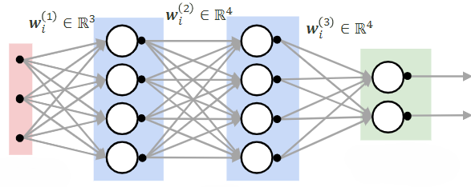

Lecture3 - Naive Bayes
Exercises
Assume that you are given the Iris dataset, consisting of flower measurements. Recall that each measurement is comprised of four variables, denoted by \([x_1\; x_2\; x_3\; x_4]\). Here \(x_1\) is the sepal length, \(x_2\) is the sepal width, \(x_3\) is the petal length, and \(x_4\) is the petal width. All the measurements are continuous variables in centimeter units. A machine learning model \(f(\cdot)\) is trained to estimate \(x_4\) given \([x_1\; x_2\; x_3]\) as the inputs. Which one of the following tasks does \(f(\cdot)\) perform?
Classification
Regression
Solution:
b) RegressionExplanation:
The model \(f(\cdot)\) is predicting a continuous variable \(x_4\) based on other continuous variables \([x_1\; x_2\; x_3]\). Since the output is a real-valued quantity rather than a discrete class label, this is a regression task.Question:
You are given a dataset of handwritten digit images. Each image has been labeled with the correct digit (0–9). However, you are asked to develop a system that groups the images based on similarity, without using the provided labels during the training process.Which type of learning approach should you use for this task?
Supervised Learning
Unsupervised Learning
Solution:
b) Unsupervised LearningExplanation:
Even though the dataset contains labels, the task explicitly states that the labels should not be used during training. Since the goal is to group similar images together based only on their features, this corresponds to unsupervised learning (specifically clustering).Given the following four points in a 2D space:
\[P_1 = (1,2), \quad P_2 = (3,4), \quad P_3 = (5,1), \quad P_4 = (7,3)\]
Calculate the \(k=2\) nearest neighbors to the new point \(P_{\text{new}}=(4,2)\) using the Manhattan distance metric.
Solution:
\(P_3\) and one of \(\{P_1, P_2\}\)Explanation:
First compute the Manhattan distance between the new point and each existing point:\[\text{Distance to } P_1 = |4-1| + |2-2| = 3\]
\[\text{Distance to } P_2 = |4-3| + |2-4| = 1+2 = 3\]
\[\text{Distance to } P_3 = |4-5| + |2-1| = 1+1 = 2\]
\[\text{Distance to } P_4 = |4-7| + |2-3| = 3+1 = 4\]
The closest point is \(P_3\) with distance 2. The next closest distance is 3, which is shared by both \(P_1\) and \(P_2\). Therefore, the second nearest neighbor is not unique unless a tie-breaking rule is specified. Thus the two nearest neighbors are \(P_3\) and either \(P_1\) or \(P_2\).
Given the following feature values for a dataset (feature 1):
\[\mathbf{x}_{:,1} = [42, 23, 4, 16, 15, 8]\]
Normalize the data using min–max normalization to scale the feature to the range \([0,1]\). Provide the normalized value for \(x_{4,1}=16\).
Solution:
0.316Explanation:
First compute the minimum and maximum values:\[\min(\mathbf{x}_{:,1}) = 4, \qquad \max(\mathbf{x}_{:,1}) = 42\]
Apply the min–max normalization formula:
\[x_{4,1}' = \frac{x_{4,1}-\min(\mathbf{x}_{:,1})} {\max(\mathbf{x}_{:,1})-\min(\mathbf{x}_{:,1})} = \frac{16-4}{42-4} = \frac{12}{38} \approx 0.316\]
Thus, the normalized value of \(x_{4,1}=16\) is approximately 0.316.
In a Naïve Bayes classifier, you are given the following prior probabilities and likelihoods for two binary features “free” and “win”:
\[P(\text{Spam}) = 0.5, \qquad P(\text{Not Spam}) = 0.5\]
\[P(\text{“free”}=1 \mid \text{Spam}) = 0.6, \qquad P(\text{“free”}=1 \mid \text{Not Spam}) = 0.3\]
\[P(\text{“win”}=1 \mid \text{Spam}) = 0.7, \qquad P(\text{“win”}=1 \mid \text{Not Spam}) = 0.2\]
(i) Calculate the unnormalized Naïve Bayes score for Spam given that the email contains both words.
Solution:
0.21Explanation:
Using the Naïve Bayes independence assumption:\[P(\text{“free”}=1,\text{“win”}=1 \mid \text{Spam}) = 0.6 \times 0.7 = 0.42.\]
The unnormalized Naïve Bayes score is:
\[\text{Score}(\text{Spam}) = P(\text{Spam}) P(\text{“free”}=1 \mid \text{Spam}) P(\text{“win”}=1 \mid \text{Spam}) = 0.5 \times 0.6 \times 0.7 = 0.21.\]
(ii) Compute the normalized posterior probability
\[P(\text{Spam}\mid \text{“free”}=1,\text{“win”}=1).\]
Solution:
\[P(\text{Spam}\mid x) = \frac{0.21}{0.21+0.03} = 0.875.\]
Explanation:
First compute the unnormalized score for Not Spam:\[P(\text{“free”}=1,\text{“win”}=1 \mid \text{Not Spam}) = 0.3 \times 0.2 = 0.06,\]
\[\text{Score}(\text{Not Spam}) = 0.06 \times 0.5 = 0.03.\]
Now normalize:
\[P(\text{Spam}\mid x) = \frac{\text{Score}(\text{Spam})} {\text{Score}(\text{Spam})+\text{Score}(\text{Not Spam})} = \frac{0.21}{0.24} = 0.875.\]
(iii) Based on your result, classify the email.
Solution:
SpamExplanation:
Since\[P(\text{Spam}\mid x)=0.875 > P(\text{Not Spam}\mid x)=0.125,\]
the classifier predicts the email is Spam.
Lecture4 - Logistic Regression
Exercises
Question:
Consider a linear regression model \(f(\mathbf{x}; \mathbf{\theta}) = \theta_1 x_1 + \theta_2 x_2\) where \(\mathbf{x} = [x_1, x_2]^T\) is the 2D input vector, and \(\mathbf{\theta} = [\theta_1, \theta_2]^T\) are the model parameters. Given the Mean Squared Error (MSE) loss function: \[\mathcal{L}_{\text{MSE}}(\mathbf{\theta}) = \frac{1}{N} \sum_{i=1}^{N} \left( y_i - \hat{y}_i \right)^2\] where \(\hat{y}_i=\theta_1 x_{i1} + \theta_2 x_{i2}\), derive the gradient of the MSE loss with respect to \(\theta_1\) and \(\theta_2\).Solution:
To find the gradient, we first differentiate the MSE loss function with respect to \(\theta_1\) and \(\theta_2\) separately.Step 1: Differentiate with respect to \(\theta_1\): \[\frac{\partial \mathcal{L}_{\text{MSE}}(\mathbf{\theta})}{\partial \theta_1} = \frac{\partial}{\partial \theta_1} \left[ \frac{1}{N} \sum_{i=1}^{N} \left( y_i - \theta_1 x_{i1} - \theta_2 x_{i2} \right)^2 \right]\] Applying the chain rule: \[\frac{\partial \mathcal{L}_{\text{MSE}}(\mathbf{\theta})}{\partial \theta_1} = \frac{2}{N} \sum_{i=1}^{N} \left( y_i - \theta_1 x_{i1} - \theta_2 x_{i2} \right) (-x_{i1})\] Simplifying: \[\frac{\partial \mathcal{L}_{\text{MSE}}(\mathbf{\theta})}{\partial \theta_1} = -\frac{2}{N} \sum_{i=1}^{N} x_{i1} \left( y_i - \theta_1 x_{i1} - \theta_2 x_{i2} \right)\]
Step 2: Differentiate with respect to \(\theta_2\): \[\frac{\partial \mathcal{L}_{\text{MSE}}(\mathbf{\theta})}{\partial \theta_2} = \frac{\partial}{\partial \theta_2} \left[ \frac{1}{N} \sum_{i=1}^{N} \left( y_i - \theta_1 x_{i1} - \theta_2 x_{i2} \right)^2 \right]\] Again, applying the chain rule: \[\frac{\partial \mathcal{L}_{\text{MSE}}(\mathbf{\theta})}{\partial \theta_2} = \frac{2}{N} \sum_{i=1}^{N} \left( y_i - \theta_1 x_{i1} - \theta_2 x_{i2} \right) (-x_{i2})\] Simplifying: \[\frac{\partial \mathcal{L}_{\text{MSE}}(\mathbf{\theta})}{\partial \theta_2} = -\frac{2}{N} \sum_{i=1}^{N} x_{i2} \left( y_i - \theta_1 x_{i1} - \theta_2 x_{i2} \right)\]
Thus, the gradient of the MSE loss function with respect to \(\mathbf{\theta} = [\theta_1, \theta_2]^T\) is: \[\nabla_{\mathbf{\theta}} \mathcal{L}_{\text{MSE}}(\mathbf{\theta}) = -\frac{2}{N} \sum_{i=1}^{N} \begin{bmatrix} x_{i1} \\ x_{i2} \end{bmatrix} \left( y_i - \theta_1 x_{i1} - \theta_2 x_{i2} \right) = -\frac{2}{N} \sum_{i=1}^{N} \left( y_i - \hat{y}_i \right) \mathbf{x}\]
Question:
For a binary classification problem, consider a logistic regression model \(\hat{y}_i = \sigma(\theta_1 x_{i1} + \theta_2 x_{i2})\) where \(\sigma(z)\) is the sigmoid function, \(\mathbf{x}_i = [x_{i1}, x_{i2}]^T\) is the 2D input, and \(y_i \in \{0, 1\}\) is the target label. The Cross-Entropy loss function is defined as: \[\mathcal{L}_{\text{CE}}(\mathbf{\theta}) = -\frac{1}{N} \sum_{i=1}^{N} \left[ y_i \log(\hat{y}_i) + (1 - y_i) \log(1 - \hat{y}_i) \right]\] Derive the gradient of the Cross-Entropy loss with respect to \(\theta_1\) and \(\theta_2\).Solution:
To find the gradient, we need to differentiate the Cross-Entropy loss function with respect to \(\theta_1\) and \(\theta_2\) separately.Step 1: Differentiate with respect to \(\theta_1\):
The Cross-Entropy loss function is given by: \[\mathcal{L}_{\text{CE}}(\mathbf{\theta}) = -\frac{1}{N} \sum_{i=1}^{N} \left[ y_i \log(\hat{y}_i) + (1 - y_i) \log(1 - \hat{y}_i) \right]\] where \(\hat{y}_i = \sigma(\theta_1 x_{i1} + \theta_2 x_{i2})\) and \(\sigma(z) = \frac{1}{1 + e^{-z}}\) is the sigmoid function.
First, let’s compute the derivative of \(\hat{y}_i\) with respect to \(\theta_1\): \[\frac{\partial \hat{y}_i}{\partial \theta_1} = \frac{\partial}{\partial \theta_1} \sigma(\theta_1 x_{i1} + \theta_2 x_{i2})\] Using the chain rule: \[\frac{\partial \hat{y}_i}{\partial \theta_1} = \sigma(\theta_1 x_{i1} + \theta_2 x_{i2}) \left( 1 - \sigma(\theta_1 x_{i1} + \theta_2 x_{i2}) \right) x_{i1}\] This simplifies to: \[\frac{\partial \hat{y}_i}{\partial \theta_1} = \hat{y}_i (1 - \hat{y}_i) x_{i1}\]
Now, let’s differentiate the Cross-Entropy loss function with respect to \(\theta_1\): \[\frac{\partial \mathcal{L}_{\text{CE}}(\mathbf{\theta})}{\partial \theta_1} = \frac{\partial}{\partial \theta_1} \left[ -\frac{1}{N} \sum_{i=1}^{N} \left( y_i \log(\hat{y}_i) + (1 - y_i) \log(1 - \hat{y}_i) \right) \right]\] Applying the chain rule to differentiate the logarithm terms: \[\frac{\partial \mathcal{L}_{\text{CE}}(\mathbf{\theta})}{\partial \theta_1} = -\frac{1}{N} \sum_{i=1}^{N} \left[ \frac{y_i}{\hat{y}_i} \cdot \frac{\partial \hat{y}_i}{\partial \theta_1} - \frac{1 - y_i}{1 - \hat{y}_i} \cdot \frac{\partial (1 - \hat{y}_i)}{\partial \theta_1} \right]\] Since \(\frac{\partial (1 - \hat{y}_i)}{\partial \theta_1} = -\frac{\partial \hat{y}_i}{\partial \theta_1}\), we get: \[\frac{\partial \mathcal{L}_{\text{CE}}(\mathbf{\theta})}{\partial \theta_1} = -\frac{1}{N} \sum_{i=1}^{N} \left[ \frac{y_i}{\hat{y}_i} \hat{y}_i (1 - \hat{y}_i) x_{i1} + \frac{1 - y_i}{1 - \hat{y}_i} \hat{y}_i (1 - \hat{y}_i) x_{i1} \right]\] Simplifying the expression: \[\frac{\partial \mathcal{L}_{\text{CE}}(\mathbf{\theta})}{\partial \theta_1} = -\frac{1}{N} \sum_{i=1}^{N} \left( y_i - \hat{y}_i \right) x_{i1}\]
Step 2: Differentiate with respect to \(\theta_2\):
The process of differentiating with respect to \(\theta_2\) is symmetric to the steps outlined above for \(\theta_1\). Thus, we have: \[\frac{\partial \mathcal{L}_{\text{CE}}(\mathbf{\theta})}{\partial \theta_2} = -\frac{1}{N} \sum_{i=1}^{N} \left( y_i - \hat{y}_i \right) x_{i2}\]
Conclusion:
The gradient of the Cross-Entropy loss function with respect to the parameter vector \(\mathbf{\theta} = [\theta_1, \theta_2]^T\) is: \[\nabla_{\mathbf{\theta}} \mathcal{L}_{\text{CE}}(\mathbf{\theta}) = \frac{\partial \mathcal{L}_{\text{CE}}(\mathbf{\theta})}{\partial \mathbf{\theta}} = -\frac{1}{N} \sum_{i=1}^{N} \begin{bmatrix} x_{i1} \\ x_{i2} \end{bmatrix} \left( y_i - \sigma(\theta_1 x_{i1} + \theta_2 x_{i2}) \right) = -\frac{1}{N} \sum_{i=1}^{N} \left( y_i - \hat{y}_i \right) \mathbf{x}\] This gradient can then be used in gradient descent to update the parameters \(\mathbf{\theta}\) during the optimization process.
Question:
Given a binary classification problem with output labels \(y_i \in \{-1, 1\}\), the hinge loss is defined as: \[\mathcal{L}_{\text{hinge}}(\mathbf{x}_i, y_i; \mathbf{\theta}) = \max(0, - y_i (\theta_1 x_{i1} + \theta_2 x_{i2}))\] Derive the subgradient of the hinge loss function with respect to \(\theta_1\) and \(\theta_2\).Solution:
The hinge loss function is not differentiable at \(- y_i (\theta_1 x_{i1} + \theta_2 x_{i2}) = 0\), so we use subgradients.Step 1: Subgradient with respect to \(\theta_1\): \[\frac{\partial \mathcal{L}_{\text{hinge}}(\mathbf{x}_i, y_i; \mathbf{\theta})}{\partial \theta_1} = \begin{cases} -y_i x_{i1}, & \text{if } - y_i (\theta_1 x_{i1} + \theta_2 x_{i2}) > 0 \\ 0, & \text{otherwise} \end{cases}\]
Step 2: Subgradient with respect to \(\theta_2\): \[\frac{\partial \mathcal{L}_{\text{hinge}}(\mathbf{x}_i, y_i; \mathbf{\theta})}{\partial \theta_2} = \begin{cases} -y_i x_{i2}, & \text{if } - y_i (\theta_1 x_{i1} + \theta_2 x_{i2}) > 0 \\ 0, & \text{otherwise} \end{cases}\]
Thus, the subgradient of the hinge loss function with respect to \(\mathbf{\theta} = [\theta_1, \theta_2]^T\) is: \[\frac{\partial \mathcal{L}_{\text{hinge}}(\mathbf{x}_i, y_i; \mathbf{\theta})}{\partial \mathbf{\theta}} = \begin{cases} -y_i \begin{bmatrix} x_{i1} \\ x_{i2} \end{bmatrix}, & \text{if } - y_i (\theta_1 x_{i1} + \theta_2 x_{i2}) > 0 \\ \begin{bmatrix} 0 \\ 0 \end{bmatrix}, & \text{otherwise} \end{cases}\]
Lecture5 - Support Vector Machines
Exercises
Run and edit this notebook interactively in JupyterLite directly from this lecture section.
Exercises
Run and edit this notebook interactively in JupyterLite directly from this lecture section.
Exercises
Run and edit this notebook interactively in JupyterLite directly from this lecture section.
Exercises
Run and edit this notebook interactively in JupyterLite directly from this lecture section.
Exercises
Run and edit this notebook interactively in JupyterLite directly from this lecture section.
Exercises
Consider the two figures below:
The left figure shows a dataset with a hard margin SVM classifier, while the right figure shows the same dataset with a soft margin SVM classifier.
Now, imagine introducing an outlier close to the decision boundary but on the incorrect side of it.
Which classifier will better handle the outlier, and why?
Hard Margin SVM: Because it maximizes the margin, it will automatically adjust the decision boundary to accommodate the outlier, resulting in a better separation of classes.
Soft Margin SVM: Because it allows some misclassification, it will tolerate the outlier and not drastically change the decision boundary, leading to a more stable classification.
Hard Margin SVM: Because it doesn’t allow misclassification, it will better manage the outlier by pushing it to the correct side of the decision boundary.
Soft Margin SVM: Because it uses a nonlinear kernel, it will correctly classify the outlier without affecting the other data points.
Solution: The correct answer is B) Soft Margin SVM.
The soft margin SVM is designed to allow some misclassification or margin violations, which makes it more robust in the presence of outliers. When an outlier is introduced near the decision boundary but on the incorrect side, the soft margin SVM can tolerate this outlier without significantly altering the decision boundary. This is due to the introduction of slack variables \(\xi_i\) in the optimization problem, allowing some points to fall within the margin or even be misclassified: \[\min_{\mathbf{w}, b, \xi} \quad \frac{1}{2} \|\mathbf{w}\|^2 + C \sum_{i=1}^{N} \xi_i\] \[\text{subject to} \quad y_i (\mathbf{w}^T \mathbf{x}_i + b) \geq 1 - \xi_i, \quad \xi_i \geq 0, \quad \forall i\] The term \(C \sum_{i=1}^{N} \xi_i\) penalizes the slack variables, balancing the margin width and the tolerance for misclassified points. A smaller \(C\) allows for a wider margin and more tolerance for outliers, resulting in a more stable model in the presence of noise or misclassified points.
In contrast, the hard margin SVM does not allow any misclassification, so introducing an outlier forces the SVM to adjust the decision boundary to perfectly classify all points, including the outlier. This can lead to significant changes in the decision boundary, potentially resulting in overfitting and poor generalization.
For the next few questions, we’ll be looking at the kernel trick. Let’s consider the following dataset:
Notice that the data is not linearly separable. Now we can either use a nonlinear classifier, or we could introduce nonlinearity into the data input itself. What if we transform the inputs into a higher dimension space, where some of the dimensions introduce nonlinearity? For example,
\[\phi: \mathbb{R}^2 \rightarrow \mathbb{R}^3 \quad \text{with} \quad (x,y) \mapsto (x,y,xy)\]
Now we can fit a linear boundary (a plane) to separate the data. Great, but what if we start in a higher dimension \(d\)?
Given a \(d\)-dimensional input, how many possible nonlinear interaction terms can be introduced in the transformation?
\(2^d\)
\(d^2\)
\(\binom{d}{2}\)
\(d \times (d-1)\)
Solution: The correct answer is \(\textbf{a) } 2^d\).
A subset-product feature is formed by choosing any subset of the \(d\) input dimensions and multiplying the chosen coordinates together. For each dimension, we have two choices: include it or exclude it from the product. Therefore, the total number of possible subset-products is \(2^d\) (including the empty subset, which corresponds to the constant feature \(1\)). This exponential growth is one reason explicit feature expansion becomes infeasible in high dimensions, and motivates using kernels to compute these inner products implicitly.
But do we actually need to compute the transformations? Recall the loss function we derived from the original optimization problem:
\[L = -\frac{1}{2}\sum_{i=1}^{N} \sum_{j=1}^{N} \alpha_i \alpha_j y_i y_j \mathbf{x^T_i} \mathbf{x_j} + \sum_{i=1}^{N} \alpha_i\]
It turns out that if we modify the original optimization problem to:
\[\min_{\mathbf{w}, b} \quad \frac{1}{2} \|\mathbf{w}\|^2 \\ \] \[\text{subject to} \quad y_i (\mathbf{w}^T \phi(\mathbf{x}_i) + b) - 1 \geq 0, \quad \forall i\]
Then the resulting dual problem and corresponding loss function involve the kernel \(K(\mathbf{x}_i, \mathbf{x}_j) = \phi(\mathbf{x}_i)^T \phi(\mathbf{x}_j)\):
\[L = -\frac{1}{2} \sum_{i=1}^{N} \sum_{j=1}^{N} \alpha_i \alpha_j y_i y_j K(\mathbf{x}_i, \mathbf{x}_j) + \sum_{i=1}^{N} \alpha_i\]
So all we care about computing is the kernel \(K(\mathbf{x}_i,\mathbf{x}_j)\). As an example, what is the kernel corresponding to the following input mapping (\(\phi:\mathbb{R}^2\rightarrow\mathbb{R}^6\))?
\[\phi(\mathbf{x}) = (x_1^2, \sqrt{2}x_1x_2, x_2^2, \sqrt{2}x_1, \sqrt{2}x_2, 1)\]
\(K(\mathbf{x}_i,\mathbf{x}_j) = (\mathbf{x}_i^T \mathbf{x}_j)^2\)
\(K(\mathbf{x}_i,\mathbf{x}_j) = (\mathbf{x}_i^T \mathbf{x}_j + 1)^2\)
\(K(\mathbf{x}_i,\mathbf{x}_j) = \sqrt{(\mathbf{x}_i^T \mathbf{x}_j + 1)}\)
\(K(\mathbf{x}_i,\mathbf{x}_j) = (\mathbf{x}_i^T \mathbf{x}_j + 1)\)
Solution: The correct answer is \(\textbf{b) } K(\mathbf{x}_i,\mathbf{x}_j) = (\mathbf{x}_i^T \mathbf{x}_j + 1)^2\).
To see why this is true, consider the expansion: \[\begin{aligned} \phi(\mathbf{x}_i)^T \phi(\mathbf{x}_j) &= x_{i1}^2x_{j1}^2 + \sqrt{2}x_{i1}x_{i2}\sqrt{2}x_{j1}x_{j2} + x_{i2}^2x_{j2}^2 + \sqrt{2}x_{i1}\sqrt{2}x_{j1} + \sqrt{2}x_{i2}\sqrt{2}x_{j2} + 1 \\ &= x_{i1}^2x_{j1}^2 + 2x_{i1}x_{i2}x_{j1}x_{j2} + x_{i2}^2x_{j2}^2 + 2x_{i1}x_{j1} + 2x_{i2}x_{j2} + 1 \\ &= (x_{i1}x_{j1} + x_{i2}x_{j2} + 1)^2 \\ &= (\mathbf{x}_i^T \mathbf{x}_j + 1)^2\end{aligned}\]
Notice that \(K(\mathbf{x}_i, \mathbf{x}_j)\) is much easier to compute directly than computing the dot product of the transformed vectors separately.
(Conceptual) Logistic Regression and a linear SVM can both produce linear decision boundaries of the form \(\mathbf{w}^T\mathbf{x}+b=0\). What is the main difference in what they optimize?
Logistic Regression maximizes the geometric margin; SVM maximizes likelihood.
Logistic Regression minimizes cross-entropy (negative log-likelihood); SVM maximizes the margin (equivalently minimizes \(\|\mathbf{w}\|\) with margin constraints).
Logistic Regression requires kernels; SVM cannot use kernels.
Logistic Regression only works for separable data; SVM works for all data.
Solution: The correct answer is B).
Logistic Regression fits probabilities by minimizing cross-entropy (negative log-likelihood). Hard/soft-margin SVMs instead choose a separator with a large margin (and with soft margin, trade off violations via \(C\)).
(Applied) You are training a linear SVM on a real dataset with a few mislabeled points (label noise). As you increase \(C\) from very small to very large, what behavior do you expect, and why?
Increasing \(C\) typically increases the margin width and improves robustness to noise.
Increasing \(C\) typically decreases the margin width and makes the classifier fit the training data more tightly, which can overfit noisy labels.
Increasing \(C\) has no effect because SVMs ignore misclassified points.
Increasing \(C\) forces the use of a nonlinear kernel, which always improves generalization.
Solution: The correct answer is B).
A larger \(C\) penalizes slack variables more, so the optimizer prefers fewer margin violations even if that means a narrower margin and a more complex boundary in feature space. With label noise/outliers, this can reduce robustness and hurt test performance.
Lecture6 - Introduction to Neural Networks
Exercises
Question:You are solving a binary classification task in which you design an ANN with a single output neuron in order to solve. Let the output of this neuron be \(z\). The final output of your network, \(y'\) is given by: \(y'=\sigma(ReLU(z))\). You classify all inputs with a final value \(y' \geq 0.5\) as a part of \(class\) \(A\) and all values with a final value of \(y' < 0.5\) as a part of \(class\) \(B\). What problem are you going to encounter in this instance? Solution:The issue in this instance is that everything would always be classified as a member of \(class\) \(A\). This is because using \(ReLU\) will always output a result in the range of \([0,\infty]\). Since any input value greater than or equal to \(0\) will always cause the sigmoid function to output a value greater than or equal to \(0.5\), this means that \(\sigma(ReLU(z))\geq0.5\) regardless of the value of \(z\). Therefore, this will always result in everything being classified as a member of \(class\) \(A\) which is a problem.
Question:An artificial neural network is designed with \(k\) inputs, and is wanting to make a boolean function to determine its class. In the worst case, how many hidden units might be required to solve for its class? Solution:In the worst case, exactly representing an arbitrary Boolean function with a single-hidden-layer network may require an exponential number of hidden units in \(k\) (e.g., \(\Theta(2^k)\) in the worst case).
Question: How many tunable parameters are there in this Neural Network?

Solution: Assuming the network is fully connected between consecutive layers and each non-input neuron has a bias: \[\#\text{weights} = 3\cdot 4 + 4\cdot 4 + 4\cdot 2 = 36,\qquad \#\text{biases} = 4+4+2 = 10.\] Thus the total number of tunable parameters is \(36+10=46\).
Question:You train a network on 20 samples trying to solve a classification task. Training converges and you see that the training loss is very high. You then decide to train this network on 10,000 more examples. Is your approach to fixing the problem correct? Solution: Probably not. If the training loss is high even after training has converged, the model is underfitting (high bias) or optimization is failing. Adding more data typically helps with variance/generalization, but it usually does not reduce training loss by itself. Better fixes include increasing model capacity (more hidden units/layers), improving optimization (learning rate/optimizer), feature scaling, and checking data/labels.
Question:What is the derivative of the Sigmoid function? Solution:\( \sigma^{'}(x) = \frac{\delta}{\delta x} (1+ e^{-x})^{-1} = -(1+e^{-x})^{-2} (-e^{-x}) = \frac{1}{1+e^{-x}} \frac{e^{-x}}{1+e^{-x}} = \sigma(x) (1 - \sigma(x)) \) This is an interesting characteristic of the Sigmoid function, that the derivative is simply 1 minus itself, times itself!
Question (Applied): You train a deep neural network and notice training accuracy is stuck near random chance. List two possible causes related to activation functions.
Solution: Possible causes include vanishing gradients (e.g., sigmoid/tanh saturation), dead ReLU neurons, poor weight initialization, or learning rate issues.
Question (Computational): A fully connected layer maps 20 inputs to 15 hidden units. How many parameters does this layer have?
Solution: Weights: \(20 \times 15 = 300\), Biases: \(15\), Total = 315 parameters.
Lecture7 - Classification Performance Evaluation
Exercises
Question: Given the following softmax output matrix for 5 inputs and 3 possible classes, where each row represents the softmax probabilities for the corresponding input across the 3 classes:
\[\begin{bmatrix} 0.2 & 0.5 & 0.3 \\ 0.1 & 0.7 & 0.2 \\ 0.6 & 0.3 & 0.1 \\ 0.3 & 0.3 & 0.4 \\ 0.5 & 0.2 & 0.3 \end{bmatrix}\]
The true labels for the 5 inputs are given in the table below:
Input True Label 1 2 2 1 3 1 4 3 5 1 Find the predicted labels, calculate the number of incorrect predictions, and construct the confusion matrix based on the predicted and true labels.
Solution: The predicted class for each input is obtained by taking the argmax of each row of the softmax matrix. We assume class labels are indexed as \(\{1,2,3\}\).
\[\begin{aligned} \text{Input 1: } & [0.2,\,0.5,\,0.3] \rightarrow \hat{y}_1 = 2 \\ \text{Input 2: } & [0.1,\,0.7,\,0.2] \rightarrow \hat{y}_2 = 2 \\ \text{Input 3: } & [0.6,\,0.3,\,0.1] \rightarrow \hat{y}_3 = 1 \\ \text{Input 4: } & [0.3,\,0.3,\,0.4] \rightarrow \hat{y}_4 = 3 \\ \text{Input 5: } & [0.5,\,0.2,\,0.3] \rightarrow \hat{y}_5 = 1 \end{aligned}\]
Thus, the predicted labels are:
\[\{\hat{y}_i\} = \{2, 2, 1, 3, 1\}\]
The true labels are:
\[\{y_i\} = \{2, 1, 1, 3, 1\}\]
Comparing predictions with true labels, only Input 2 is misclassified (true label \(1\), predicted \(2\)). Therefore, there is 1 incorrect prediction.
To construct the confusion matrix, we use a \(3\times3\) matrix where:
\[\text{rows} = \text{true classes}, \quad \text{columns} = \text{predicted classes}.\]
We count occurrences of each \((\text{true},\text{predicted})\) pair:
\[\begin{aligned} \text{True class 1: } & \text{predicted as }1 \text{ twice (inputs 3,5)}, \\ & \text{predicted as }2 \text{ once (input 2)} \\[2mm] \text{True class 2: } & \text{predicted as }2 \text{ once (input 1)} \\[2mm] \text{True class 3: } & \text{predicted as }3 \text{ once (input 4)} \end{aligned}\]
Hence, the confusion matrix is:
\[\begin{bmatrix} 2 & 1 & 0 \\ 0 & 1 & 0 \\ 0 & 0 & 1 \end{bmatrix}\]
Row \(i\) corresponds to true class \(i\), and column \(j\) corresponds to predicted class \(j\). For example, entry \((1,2)=1\) indicates one sample from class 1 was predicted as class 2.
Question: You are given a balanced dataset for a binary classification task where the number of positive and negative samples is equal (in general, balanced is to say that they are roughly equal). After training your model, you receive the following confusion matrix:
\[\begin{bmatrix} 40 & 10 \\ 10 & 40 \end{bmatrix}\]
What are the accuracy and F1 score for this model?
Accuracy = 0.80, F1 Score = 0.80
Accuracy = 0.90, F1 Score = 0.90
Accuracy = 0.90, F1 Score = 0.89
Accuracy = 0.95, F1 Score = 0.94
Solution: In this balanced dataset, the number of positive and negative samples is equal, so both accuracy and F1 score should give a good representation of model performance. To calculate accuracy, we use the formula:
\[\text{Accuracy} = \frac{\text{TP} + \text{TN}}{\text{TP} + \text{TN} + \text{FP} + \text{FN}} = \frac{40 + 40}{40 + 40 + 10 + 10} = 0.80\]
Next, for the F1 score, we calculate precision and recall:
\[\text{Precision} = \frac{\text{TP}}{\text{TP} + \text{FP}} = \frac{40}{40 + 10} = 0.80\]
\[\text{Recall} = \frac{\text{TP}}{\text{TP} + \text{FN}} = \frac{40}{40 + 10} = 0.80\]
Then, the F1 score is:
\[\text{F1 Score} = 2 \times \frac{\text{Precision} \times \text{Recall}}{\text{Precision} + \text{Recall}} = 2 \times \frac{0.80 \times 0.80}{0.80 + 0.80} = 0.80\]
Thus, the correct answer is: (a) Accuracy = 0.80, F1 Score = 0.80.
Question: Now suppose you are given an imbalanced dataset for a binary classification task where 90% of the samples are negative, and only 10% are positive. After training your model, you receive the following confusion matrix:
\[\begin{bmatrix} 85 & 5 \\ 10 & 0 \end{bmatrix}\]
What are the accuracy and F1 score for this model?
Accuracy = 0.85, F1 Score = 0.00
Accuracy = 0.90, F1 Score = 0.00
Accuracy = 0.85, F1 Score = 0.91
Accuracy = 0.90, F1 Score = 0.25
Solution: In this imbalanced dataset, accuracy can be misleading because the model may perform well on the majority class (negative samples) while failing completely on the minority positive class.
From the confusion matrix
\[\begin{bmatrix} 85 & 5 \\ 10 & 0 \end{bmatrix}\]
using the standard layout (rows = true class, columns = predicted class):
\[\text{TN} = 85, \quad \text{FP} = 5, \quad \text{FN} = 10, \quad \text{TP} = 0\]
\[\text{Accuracy} = \frac{TP + TN}{TP + TN + FP + FN} = \frac{0 + 85}{0 + 85 + 5 + 10} = 0.85\]
Although accuracy appears high, the model completely fails to detect the positive class.
\[\text{Precision} = \frac{TP}{TP + FP} = \frac{0}{0 + 5} = 0\]
\[\text{Recall} = \frac{TP}{TP + FN} = \frac{0}{0 + 10} = 0\]
\[\text{F1 Score} = 2 \times \frac{\text{Precision} \times \text{Recall}}{\text{Precision} + \text{Recall}} = 0\]
Therefore, the correct answer is:
\[\boxed{\textbf{(a) Accuracy = 0.85, F1 Score = 0.00}}\]
In this imbalanced setting, accuracy is misleading because the model can score high by predicting the majority (negative) class. In contrast, the F1 score for the positive class is 0, correctly reflecting that the model completely fails to identify positive examples. Notice that if the positive and negative classes were flipped, we would see the following calculations instead: \[\text{Precision} = \frac{\text{TP}}{\text{TP} + \text{FP}} = \frac{0}{0 + 10} = 0\]
\[\text{Recall} = \frac{\text{TP}}{\text{TP} + \text{FN}} = \frac{0}{0 + 5} = 0\]
\[\text{F1 Score} = 2 \times \frac{\text{Precision} \times \text{Recall}}{\text{Precision} + \text{Recall}} = 0\]
This again reflects poorly on the performance of the negative class, which is now the original positive class (fairly good accuracy). From this exercise, we can see that we must be careful on how we report on the performance of a classifier using these different metrics, especially in class imbalanced settings.
Consider the table below, which shows model predictions and ground truth for a binary classification task.
\[\begin{tabular}{|c|c|c|} \hline \textbf{Sample} & \textbf{Ground Truth} & \textbf{Model Prediction} \\ \hline 1 & 1 & 1 \\ 2 & 1 & 0 \\ 3 & 0 & 1 \\ 4 & 1 & 1 \\ 5 & 0 & 0 \\ 6 & 0 & 0 \\ 7 & 0 & 0 \\ 8 & 0 & 1 \\ \hline \end{tabular}\]
Calculate the following evaluation metrics:
True Positive Rate (TPR), i.e. Sensitivity/Recall
False Positive Rate (FPR)
Precision
Specificity
F1 score
Solution:
Step 1: Identify TP, FP, TN, FN for each sample
Sample Ground Truth Prediction Type 1 1 1 TP 2 1 0 FN 3 0 1 FP 4 1 1 TP 5 0 0 TN 6 0 0 TN 7 0 0 TN 8 0 1 FP Step 2: Count each category
True Positives (TP) = 2 (samples 1, 4)
False Positives (FP) = 2 (samples 3, 8)
True Negatives (TN) = 3 (samples 5, 6, 7)
False Negatives (FN) = 1 (sample 2)
Step 3: Compute evaluation metrics
\[\begin{aligned} R=\text{True Positive Rate (TPR)} &= \frac{TP}{TP + FN} = \frac{2}{2 + 1} = \frac{2}{3} \\[6pt] \text{False Positive Rate (FPR)} &= \frac{FP}{FP + TN} = \frac{2}{2 + 3} = \frac{2}{5} \\[6pt] P=\text{Precision} &= \frac{TP}{TP + FP} = \frac{2}{2 + 2} = \frac{1}{2} \\[6pt] \text{Specificity} &= \frac{TN}{TN + FP} = \frac{3}{3 + 2} = \frac{3}{5} \\[6pt] \text{F1 Score} &= 2\times\frac{P\times R}{P + R} = 2\times\frac{(1/2)(2/3)}{1/2 + 2/3} = \frac{4}{7} \end{aligned}\]
Notice that
\[1-\text{Specificity} = 1-\frac{3}{5} = \frac{2}{5} = \text{FPR}.\]
Lecture8 - Linear Regression
Exercises
Consider the following dataset with 3 data points and 3 features:
\[\mathbf{X} = \begin{bmatrix} 1 & 1 & 0 \\ 0 & 2 & 1 \\ 1 & 0 & 1 \end{bmatrix}, \quad \mathbf{y} = \begin{bmatrix} 2 \\ 3 \\ 4 \end{bmatrix}\] Find the least squares solution for this linear regression problem.
Solution: First, compute \(\mathbf{X}^T \mathbf{X}\): \[\mathbf{X}^T \mathbf{X} = \begin{bmatrix} 1 & 0 & 1 \\ 1 & 2 & 0 \\ 0 & 1 & 1 \end{bmatrix} \begin{bmatrix} 1 & 1 & 0 \\ 0 & 2 & 1 \\ 1 & 0 & 1 \end{bmatrix} = \begin{bmatrix} 2 & 1 & 1 \\ 1 & 5 & 2 \\ 1 & 2 & 2 \end{bmatrix}\] Notice that \(\det(\mathbf{X}^T \mathbf{X})=2(10-4)-(2-2)+(2-5)=9\neq 0\), hence this matrix is invertible. Now compute \(\mathbf{X}^T \mathbf{y}\): \[\mathbf{X}^T \mathbf{y} = \begin{bmatrix} 1 & 0 & 1 \\ 1 & 2 & 0 \\ 0 & 1 & 1 \end{bmatrix} \begin{bmatrix} 2 \\ 3 \\ 4 \end{bmatrix} = \begin{bmatrix} 6 \\ 8 \\ 7 \end{bmatrix}\] Finally, since \(\mathbf{X}^T \mathbf{X}\) is invertible, we can now compute: \[\hat{\boldsymbol{\theta}} = (\mathbf{X}^T \mathbf{X})^{-1} \mathbf{X}^T \mathbf{y} = \begin{bmatrix} 2 & 1 & 1 \\ 1 & 5 & 2 \\ 1 & 2 & 2 \end{bmatrix}^{-1} \begin{bmatrix} 6 \\ 8 \\ 7 \end{bmatrix} = \begin{bmatrix} 5/3 \\ 1/3 \\ 7/3 \end{bmatrix}\]
(Geometric interpretation / projection matrix) Let \(\mathbf{X}\in\mathbb{R}^{N\times(P+1)}\) have full column rank. Define the projection matrix \[\mathbf{P} = \mathbf{X}(\mathbf{X}^T\mathbf{X})^{-1}\mathbf{X}^T.\]
Show that \(\mathbf{P}\) is symmetric.
Show that \(\mathbf{P}\) is idempotent, i.e., \(\mathbf{P}^2=\mathbf{P}\).
Explain (in one sentence) what \(\hat{\mathbf{y}}=\mathbf{P}\mathbf{y}\) represents.
Solution:
Symmetry: \[\mathbf{P}^T = \left(\mathbf{X}(\mathbf{X}^T\mathbf{X})^{-1}\mathbf{X}^T\right)^T = \mathbf{X}(\mathbf{X}^T\mathbf{X})^{-1}\mathbf{X}^T = \mathbf{P},\] since \((\mathbf{X}^T\mathbf{X})^{-1}\) is symmetric.
Idempotence: \[\mathbf{P}^2 = \mathbf{X}(\mathbf{X}^T\mathbf{X})^{-1}\mathbf{X}^T\mathbf{X}(\mathbf{X}^T\mathbf{X})^{-1}\mathbf{X}^T = \mathbf{X}(\mathbf{X}^T\mathbf{X})^{-1}\mathbf{X}^T = \mathbf{P}.\]
Interpretation: \(\hat{\mathbf{y}}=\mathbf{P}\mathbf{y}\) is the orthogonal projection of \(\mathbf{y}\) onto \(\mathrm{span}(\mathbf{X})\) (the column space of \(\mathbf{X}\)).
(Ridge regression closed form) Consider Ridge regression: \[L(\boldsymbol{\theta})=\frac{1}{N}\|\mathbf{X}\boldsymbol{\theta}-\mathbf{y}\|_2^2+\lambda\|\boldsymbol{\theta}\|_2^2,\qquad \lambda\ge 0.\] Derive the closed-form minimizer \(\hat{\boldsymbol{\theta}}_{\mathrm{ridge}}\).
Solution: Differentiate and set the gradient to zero: \[\nabla_{\boldsymbol{\theta}}L = \frac{2}{N}\mathbf{X}^T(\mathbf{X}\boldsymbol{\theta}-\mathbf{y}) + 2\lambda\boldsymbol{\theta} = \mathbf{0}.\] Rearrange: \[\left(\frac{1}{N}\mathbf{X}^T\mathbf{X}+\lambda \mathbf{I}\right)\boldsymbol{\theta} = \frac{1}{N}\mathbf{X}^T\mathbf{y}.\] Thus, \[\hat{\boldsymbol{\theta}}_{\mathrm{ridge}} = \left(\mathbf{X}^T\mathbf{X}+N\lambda \mathbf{I}\right)^{-1}\mathbf{X}^T\mathbf{y}.\] (Equivalently, if the \(1/N\) scaling is omitted in the loss definition, the solution becomes \(\hat{\boldsymbol{\theta}}_{\mathrm{ridge}}=(\mathbf{X}^T\mathbf{X}+\lambda\mathbf{I})^{-1}\mathbf{X}^T\mathbf{y}\).)
Lecture9 - Polynomial Regression
Exercises
Run and edit this notebook interactively in JupyterLite directly from this lecture section.
Exercises
Question 1:
Suppose you are training a machine learning model using Gradient Descent (GD) on a dataset with \(N = 1{,}000{,}000\) training examples and \(P = 100\) features. You consider the following options:
Batch Gradient Descent
Stochastic Gradient Descent
Mini-batch Gradient Descent with a batch size of \(b = 10{,}000\)
Assuming you perform one full epoch of training for each method, calculate the number of iterations required for each optimization scheme.
Batch GD: 1 iteration; Stochastic GD: 1,000,000 iterations; Mini-batch GD: 100 iterations
Batch GD: 1,000,000 iterations; Stochastic GD: 1 iteration; Mini-batch GD: 100 iterations
Batch GD: 100 iterations; Stochastic GD: 10 iterations; Mini-batch GD: 1,000 iterations
Batch GD: 1 iteration; Stochastic GD: 100,000 iterations; Mini-batch GD: 10 iterations
Answer: The correct answer is A).
Solution:
In Batch GD, one iteration computes the gradient using the entire dataset. Therefore, one epoch corresponds to 1 iteration.
In Stochastic GD, one iteration uses one training example. Therefore, one epoch requires \[N = 1{,}000{,}000 \text{ iterations.}\]
In Mini-batch GD with batch size \(b = 10{,}000\), one iteration processes one batch. The number of batches per epoch is \[\frac{N}{b} \;=\; \frac{1{,}000{,}000}{10{,}000} \;=\; 100,\] so one epoch requires 100 iterations.
Question 2:
Suppose you have a limited memory capacity that allows you to process a maximum of 50,000 data points at a time. Which optimization methods can you use without exceeding the memory limit?
Only Stochastic GD
Stochastic GD and Mini-batch GD with \(b \leq 50{,}000\)
Batch GD and Mini-batch GD with \(b = 50{,}000\)
All methods can be used without exceeding the memory limit
Answer: The correct answer is B).
Solution:
Batch GD processes the entire dataset per iteration. For \(N=1{,}000{,}000\), this exceeds the memory limit of 50,000 samples.
Stochastic GD processes one sample per iteration, which is always within the memory limit.
Mini-batch GD processes \(b\) samples per iteration, so it is feasible as long as \(b \le 50{,}000\).
Question 3:
If you wish to perform 10 full passes over the data using Mini-batch GD with \(b = 20{,}000\), how many iterations will this require?
50 iterations
5,000 iterations
1,000 iterations
500 iterations
Answer: The correct answer is D).
Solution:
Batches per epoch: \[\frac{N}{b} \;=\; \frac{1{,}000{,}000}{20{,}000} \;=\; 50.\] For \(10\) epochs, total iterations: \[50 \times 10 \;=\; 500 \text{ iterations.}\]
Question 4:
Consider the following contour plot for MSE loss of a 2D linear model, as well as the contour plot for the \(L_1\)-norm of the parameters.
Interactive Notebook: Lecture 8 Polynomial and Optimization
Transition from linear to polynomial fits and explore contour/loss behavior with alpha and stopping controls.
Which of the following contour plots most likely represents the contour plot for the \(L_1\)-regularized MSE loss on the same model?
Answer: The correct answer is A).
Solution:
The \(L_1\)-regularized objective is \[J(\theta) = \mathrm{MSE}(\theta) + \lambda \|\theta\|_1 .\]
This objective combines two different contour geometries:
The MSE loss produces smooth elliptical contours.
The \(L_1\) norm produces diamond-shaped contours with sharp corners on the coordinate axes.
When the \(L_1\) penalty is added to the MSE loss, the resulting contours become a distorted ellipse that inherits the axis-aligned corners (kinks) from the \(L_1\) norm. These corners reflect the sparsity-inducing behavior of \(L_1\) regularization, which encourages parameters to become exactly zero.
Options (c) and (d) resemble the contours of the individual terms (MSE alone or \(L_1\) alone), so they cannot represent the combined objective.
Among the remaining choices, option (b) still appears too smooth and elliptical, similar to the unregularized MSE loss. Option (a) shows the expected elliptical shape with visible axis-aligned kinks, which is characteristic of an \(L_1\)-regularized objective.
Therefore, option (a) is the correct contour plot.
Question 5: Linear vs Polynomial Regression (Numerical + Visual)
We generate synthetic data from a nonlinear function and compare how well a linear model and a polynomial model fit the data using Mean Squared Error (MSE).
We sample data from the ground-truth function \[y = \sin(2\pi x) + \epsilon, \qquad \epsilon \sim \mathcal{N}(0,\,0.1^2).\]
We fit two models:
Linear regression (degree 1)
Polynomial regression (degree 5)
Which model should achieve the lower training MSE? Why?
Answer: Polynomial regression (degree 5).
Solution:
Step 1: Generate synthetic dataset
We sample training inputs and noisy targets: \[x_i \sim \text{Uniform}(0,1), \qquad y_i = \sin(2\pi x_i) + \epsilon_i.\]
This produces a clearly nonlinear dataset.
Interactive Notebook: Lecture 8 Polynomial and Optimization
Transition from linear to polynomial fits and explore contour/loss behavior with alpha and stopping controls.
Step 2: Fit linear regression
Design matrix: \[\mathbf{X}_{\text{lin}} = \begin{bmatrix} 1 & x_1\\ \vdots & \vdots\\ 1 & x_N \end{bmatrix}\]
Model: \[\hat{\mathbf{y}} = \mathbf{X}_{\text{lin}}\boldsymbol{\theta}_{\text{lin}}.\]
Training MSE: \[\mathrm{MSE}_{\text{linear}} = \frac{1}{N}\|\mathbf{y} - \hat{\mathbf{y}}\|_2^2.\]
Because the true relationship is nonlinear, the linear model has high bias and cannot capture the curvature of the data.
Step 3: Fit polynomial regression (degree 5)
Polynomial feature map: \[\boldsymbol{\phi}(x) = [1, x, x^2, x^3, x^4, x^5]^T.\]
Design matrix: \[\mathbf{X}_{\text{poly}} = \begin{bmatrix} \boldsymbol{\phi}(x_1)^T\\ \vdots\\ \boldsymbol{\phi}(x_N)^T \end{bmatrix}.\]
Model: \[\hat{\mathbf{y}} = \mathbf{X}_{\text{poly}}\boldsymbol{\theta}_{\text{poly}}.\]
This model has greater flexibility and can approximate the sinusoidal shape of the data.
Step 4: Numerical comparison (reproducible simulation)
For the generated dataset (\(N=50\)):
\[\mathrm{MSE}_{\text{linear}} = 0.1691\] \[\mathrm{MSE}_{\text{poly}} = 0.0052\]
Interactive Notebook: Lecture 8 Polynomial and Optimization
Transition from linear to polynomial fits and explore contour/loss behavior with alpha and stopping controls.
Polynomial regression achieves a dramatically lower training error.
Key Insight
Linear regression underfits nonlinear data (high bias).
Polynomial regression reduces bias and captures curvature.
Increasing model complexity can significantly reduce training MSE.
Lecture10 - Regularization and Performance Metrics
Exercises
Question 1:
Which optimization method uses Second-order curvature information of the loss function?
Gradient Descent
Coordinate Descent
Newton’s Method
Stochastic Gradient Descent
Answer: The correct answer is C).
Solution:
Newton’s Method uses both the gradient and the Hessian matrix: \[\boldsymbol{\theta}^{t+1} = \boldsymbol{\theta}^{t} -\alpha \mathbf{H}(\boldsymbol{\theta})^{-1} \nabla_{\boldsymbol{\theta}} L(\boldsymbol{\theta}).\]
The Hessian contains second derivatives and captures curvature of the loss surface.
Question 2:
Why is Newton’s Method rarely used for very large models?
It does not converge.
It requires storing and inverting a \(P\times P\) Hessian matrix.
It cannot minimize convex functions.
It requires labeled data.
Answer: The correct answer is B).
Solution:
The Hessian has size \(P\times P\). Storing it costs \(O(P^2)\) memory and inverting it costs \(O(P^3)\) time, which becomes infeasible when \(P\) is large.
Question 3:
Which optimization method can be used when gradients are unavailable?
Newton’s Method
Gradient Descent
Coordinate Search
Ridge Regression
Answer: The correct answer is C).
Solution:
Coordinate Search is a derivative-free method. It explores directions \(\boldsymbol{\theta} \pm \alpha \mathbf{e}_j\) and accepts moves that reduce the loss.
Question 4:
What is the main effect of Ridge (\(\ell_2\)) regularization on model coefficients?
Sets many coefficients exactly to zero
Shrinks coefficients smoothly toward zero
Increases model variance
Removes correlated features automatically
Answer: The correct answer is B).
Solution:
Ridge adds the penalty \(\lambda\|\boldsymbol{\theta}\|_2^2\), which discourages large parameter values and reduces variance, but does not usually force coefficients to exactly zero.
Question 5:
Which regularization technique performs automatic feature selection?
Ridge Regression
Lasso Regression
Elastic Net with \(r=0\)
Mean Squared Error
Answer: The correct answer is B).
Solution:
Lasso uses the \(L_1\) penalty applied to the parameter vector \(\boldsymbol{\theta}\): \(\sum |\theta_j|\), which creates sharp corners in the optimization landscape. Solutions often lie on these corners, causing some coefficients to become exactly zero.
Question 6:
Which metric is most sensitive to large outliers?
MAE
MSE
Accuracy
\(R^2\)
Answer: The correct answer is B).
Solution:
MSE squares the error: \[(\hat{y}_i - y_i)^2,\] which heavily penalizes large errors, making it sensitive to outliers.
Question 7:
A model achieves \(R^2 = -0.3\) on a test set. What does this mean?
Perfect predictions
Better than predicting the mean
Worse than predicting the mean
Overfitting has been eliminated
Answer: The correct answer is C).
Solution:
\[R^2 = 1 - \frac{SS_{res}}{SS_{tot}}.\] If \(R^2 < 0\), the model performs worse than simply predicting the mean of the data.
Question 8:
Why must the test set never be used during training or hyperparameter tuning?
It increases computation time
It causes underfitting
It introduces evaluation bias
It reduces training accuracy
Answer: The correct answer is C).
Solution:
Using the test set during model development leaks information and produces overly optimistic performance estimates.
Question 9:
Suppose \(10\%\) of dataset labels are incorrect. What is the maximum achievable measured accuracy of a perfect model?
100%
95%
90%
80%
Answer: The correct answer is C).
Solution:
With label noise \(\epsilon\): \[\text{Observed Accuracy} \le 1-\epsilon.\] If \(\epsilon=0.1\), the maximum observed accuracy is \(0.9\).
Question 10:
Which method helps estimate generalization performance while using all available data efficiently?
Cross-validation
Gradient Descent
Newton’s Method
Coordinate Search
Answer: The correct answer is A).
Solution:
In \(k\)-fold cross-validation, the model is trained \(k\) times using different validation splits, and performance is averaged to estimate generalization error.
Question 11:
Consider the model complexity vs. prediction error curve below.
Interactive Notebook: Lecture 9 Regularization Controls
Adjust noise, sample count, lambda, and model complexity to study bias-variance and regularization effects.
Which region corresponds to an underfitting model?
Region A (left side)
Region B (middle)
Region C (right side)
All regions equally
Answer: The correct answer is A).
Solution:
On the left side of the curve, the model has low complexity and high bias. It cannot capture patterns in the data, leading to high training and validation error. This is the definition of underfitting.
Lecture11 - Clustering
Exercises
The following table shows the regression outputs from three different models on five samples, along with the ground-truth (GT) values. We will use this table to build intuition about bias, variance, and underfitting.
| Sample | GT | Model 1 | Model 2 | Model 3 |
|---|---|---|---|---|
| 1 | 5 | 4.8 | 5.2 | 5.0 |
| 2 | 6 | 4.7 | 5.3 | 6.0 |
| 3 | 7 | 4.9 | 5.5 | 7.2 |
| 4 | 8 | 5.0 | 5.7 | 8.0 |
| 5 | 9 | 5.2 | 5.9 | 9.3 |
Important note. In the formal bias–variance decomposition, bias and variance are defined with respect to many possible training datasets. Since we only have one dataset here, we will use a simplified empirical proxy: we treat the model predictions across samples as if they were repeated predictions. This lets us build intuition about bias and variance without requiring multiple datasets.
Question: What is the average empirical bias proxy for each model across the five samples? Options:
Model 1: 2.92, Model 2: 0.44, Model 3: 0.08
Model 1: 6.33, Model 2: 4.19, Model 3: 2.01
Model 1: 2.92, Model 2: 1.44, Model 3: 0.08
Model 1: 1.92, Model 2: 4.19, Model 3: 2.01
Solution: We approximate bias using the squared difference between the model’s mean prediction and the ground truth values for each sample.
Model 1: \[\text{Mean of Model 1's predictions} = \frac{4.8 + 4.7 + 4.9 + 5.0 + 5.2}{5} = 4.92\] \[\text{Avg Bias for Model 1} = \frac{(4.92 - 5)^2 + (4.92 - 6)^2 + (4.92 - 7)^2 + (4.92 - 8)^2 + (4.92 - 9)^2}{5} = 6.33\]
Model 2: \[\text{Mean of Model 2's predictions} = \frac{5.2 + 5.3 + 5.5 + 5.7 + 5.9}{5} = 5.52\] \[\text{Avg Bias for Model 2} = \frac{(5.52 - 5)^2 + (5.52 - 6)^2 + (5.52 - 7)^2 + (5.52 - 8)^2 + (5.52 - 9)^2}{5} = 4.19\]
Model 3: \[\text{Mean of Model 3's predictions} = \frac{5.0 + 6.0 + 7.2 + 8.0 + 9.3}{5} = 7.1\] \[\text{Avg Bias for Model 3} = \frac{(7.1 - 5)^2 + (7.1 - 6)^2 + (7.1 - 7)^2 + (7.1 - 8)^2 + (7.1 - 9)^2}{5} = 2.01\] The correct answer is (b) Model 1: 6.33, Model 2: 4.19, Model 3: 2.01.
Question: What is the average empirical variance proxy for each model? Options:
Model 1: 0.03, Model 2: 0.08, Model 3: 0.13
Model 1: 0.05, Model 2: 0.12, Model 3: 0.15
Model 1: 0.04, Model 2: 0.08, Model 3: 0.12
Model 1: 0.03, Model 2: 0.07, Model 3: 2.26
Solution: We approximate variance as the variance of the model’s predictions.
Variance is calculated as the average of the squared differences between each model’s predictions and its mean prediction.
Model 1: \[\text{Variance for Model 1} = \frac{(4.8 - 4.92)^2 + (4.7 - 4.92)^2 + (4.9 - 4.92)^2 + (5.0 - 4.92)^2 + (5.2 - 4.92)^2}{5} = 0.03\]
Model 2: \[\text{Variance for Model 2} = \frac{(5.2 - 5.52)^2 + (5.3 - 5.52)^2 + (5.5 - 5.52)^2 + (5.7 - 5.52)^2 + (5.9 - 5.52)^2}{5} = 0.07\]
Model 3: \[\text{Variance for Model 3} = \frac{(5.0 - 7.1)^2 + (6.0 - 7.1)^2 + (7.2 - 7.1)^2 + (8.0 - 7.1)^2 + (9.3 - 7.1)^2}{5} = 2.26\]
The correct answer is (d) Model 1: 0.03, Model 2: 0.07, Model 3: 2.26.
Question: If the differences in bias/variance values are significant enough, would we expect model 1 is more likely to have overfit or underfit? Options:
Underfit
Overfit
Solution: Model 1 exhibits underfitting because it has high bias and low variance, meaning it is too simple and fails to capture the complexity of the data. Hence, the correct answer is (a) Underfit.
Lecture12 - Clustering
Exercises
Question: Given the following centroids for a k-means clustering model: \[M_1 = (2, 3), \quad M_2 = (7, 8), \quad M_3 = (5, 2)\] and a new data point \(x_{\text{new}} = (4, 4)\), which cluster should \(x_{\text{new}}\) be assigned to using the Euclidean distance metric? If there is a tie, choose the cluster with the smaller index. Options:
Cluster 1
Cluster 2
Cluster 3
Solution: We compute the Euclidean distance from \(x_{\text{new}}=(4,4)\) to each centroid: \[d(x_{\text{new}}, M_1) = \sqrt{(4 - 2)^2 + (4 - 3)^2} = \sqrt{5} \approx 2.24\] \[d(x_{\text{new}}, M_2) = \sqrt{(4 - 7)^2 + (4 - 8)^2} = \sqrt{25} = 5\] \[d(x_{\text{new}}, M_3) = \sqrt{(4 - 5)^2 + (4 - 2)^2} = \sqrt{5} \approx 2.24\] There is a tie between Cluster 1 and Cluster 3. By the tie-break rule (smaller index), we assign \(x_{\text{new}}\) to Cluster 1. Therefore, the correct answer is (a) Cluster 1.
Question: In a k-Medoids clustering model, the following medoids were determined after training: \[M_1 = (1, 5), \quad M_2 = (4, 5)\] A new data point \(x_{\text{new}} = (3, 6)\) arrives. Using the Chebyshev distance (L-infinity norm), which cluster does \(x_{\text{new}}\) belong to? Options:
Cluster 1
Cluster 2
Solution: The Chebyshev distance between two points \((x_1, y_1)\) and \((x_2, y_2)\) is calculated as: \[d(x_{\text{new}}, M_j) = \max\{|x_1 - x_2|, |y_1 - y_2|\}\] We calculate the Chebyshev distance between \(x_{\text{new}} = (3, 6)\) and each medoid: \[d(x_{\text{new}}, M_1) = \max\{|3 - 1|, |6 - 5|\} = \max\{2, 1\} = 2\] \[d(x_{\text{new}}, M_2) = \max\{|3 - 4|, |6 - 5|\} = \max\{1, 1\} = 1\] Since the distance to Cluster 2 is lower, we will assign \(x_{\text{new}}\) to Cluster. The correct answer is (b) Cluster 2.
Question: In standard k-means, each iteration alternates between: (i) assigning each point to its nearest centroid, and (ii) updating each centroid to be the mean of its assigned points. Which statement is most correct about the SSD objective \[\mathrm{SSD} = \sum_{j=1}^k \sum_{x_i \in C_j} \|x_i - m_j\|_2^2\] during these steps? Options:
The assignment step can increase SSD, but the update step always decreases it.
The assignment step never increases SSD, and the update step never increases SSD.
The assignment step always decreases SSD, but the update step can increase it.
SSD can increase in both steps, but typically decreases in practice.
Solution: Fix the centroids \(\{m_j\}_{j=1}^k\). The assignment step chooses, for each \(x_i\), the cluster whose centroid is closest, which minimizes \(\|x_i - m_j\|_2^2\) among all clusters. Therefore, reassigning points to their nearest centroids cannot increase the total SSD. Next, fix the assignments \(\{C_j\}_{j=1}^k\). For each cluster \(C_j\), the centroid update sets \[m_j \leftarrow \frac{1}{|C_j|}\sum_{x_i \in C_j} x_i,\] which is the minimizer of \(\sum_{x_i\in C_j}\|x_i - m\|_2^2\) over \(m\) (the mean minimizes squared Euclidean error). Thus the update step also cannot increase SSD. Hence SSD is non-increasing in both steps. The correct answer is (b).
Question: In k-means++, after selecting some centroids, each remaining point \(x_i\) is sampled as the next centroid with probability \[p(x_i)=\frac{D(x_i)^2}{\sum_r D(x_r)^2}, \quad\text{where } D(x_i)=\min_{1\le j\le t}\|x_i-m_j\|_2.\] Which statement best captures the effect of this rule? Options:
Points closer to existing centroids are more likely to be selected next.
Points farther from existing centroids are more likely to be selected next.
All points are equally likely to be selected next (uniform sampling).
The next centroid must be the single farthest point (deterministic).
Solution: Because \(p(x_i)\) is proportional to \(D(x_i)^2\), points with larger distance to their nearest already-chosen centroid receive larger probability mass. This encourages centroids to be well-separated and spread across the dataset. Therefore, the correct answer is (b).
Question: Mini-batch k-means uses a running-average style centroid update rather than recomputing the exact mean over all points in a cluster each iteration. Which is the main reason for using a running average? Options:
It guarantees convergence to the global minimum of SSD.
It reduces per-iteration computation by avoiding full passes over all \(N\) points.
It makes the method robust to outliers by replacing the mean with the median.
It eliminates the need to choose the number of clusters \(k\).
Solution: Mini-batch k-means processes only a small batch of size \(b\ll N\) per iteration. Since each update sees only a subset of points, the algorithm cannot compute the true full-dataset cluster means every step. A running average incorporates past information across many mini-batches while keeping each iteration cheap. Thus the main motivation is computational scalability. The correct answer is (b).
Question: You have a dataset with occasional extreme outliers. You want cluster centers to be less affected by these outliers. Which modification is most appropriate? Options:
Use k-means with Euclidean distance and means (standard k-means).
Use k-medians with Manhattan (L1) distance and medians.
Use k-means++ initialization; this alone makes k-means robust to outliers.
Increase \(k\); more clusters always makes the solution robust to outliers.
Solution: The mean is sensitive to extreme values, so standard k-means centroids can be pulled toward outliers. Replacing the mean with the median improves robustness, and pairing this with Manhattan (L1) distance aligns naturally with median-based updates. Therefore, the best choice is k-medians with L1 distance. The correct answer is (b).
Lecture13 - GMMs and Performance Evaluation
Exercises
The following table shows the clustering results from two different methods on five samples, along with the ground truth (GT) cluster assignments.
| Sample | Features | GT Cluster | Method 1 | Method 2 |
|---|---|---|---|---|
| 1 | [0,1] | 1 | 1 | 1 |
| 2 | [1,1] | 1 | 1 | 2 |
| 3 | [3,1] | 2 | 2 | 2 |
| 4 | [5,1] | 2 | 3 | 3 |
| 5 | [6,1] | 3 | 3 | 3 |
Question: What is the Rand Index (RI) for each method, calculated across all five samples? Options:
Method 1: 0.80, Method 2: 0.60
Method 1: 0.60, Method 2: 0.85
Method 1: 0.75, Method 2: 0.90
Method 1: 0.80, Method 2: 0.95
Solution: The Rand Index (RI) is calculated as the ratio of the number of agreements between the two clusterings (both in-cluster and out-of-cluster pairs) to the total number of possible pairs. We first need to examine each pair of samples and compare their cluster assignments in both the ground truth and the clustering methods.
For Method 1:Cluster Assignments for Ground Truth and Method 1 Pairs of Samples Ground Truth Clusters (GT) Method 1 Clusters (S1, S2) (C1, C1) (C1, C1) (S1, S3) (C1, C2) (C1, C2) (S1, S4) (C1, C2) (C1, C3) (S1, S5) (C1, C3) (C1, C3) (S2, S3) (C1, C2) (C1, C2) (S2, S4) (C1, C2) (C1, C3) (S2, S5) (C1, C3) (C1, C3) (S3, S4) (C2, C2) (C2, C3) (S3, S5) (C2, C3) (C2, C3) (S4, S5) (C2, C3) (C3, C3) From the table, we can count:
\(a = 1\) (pair (S1, S2) where both GT and Method 1 agree that the clusters are in the same cluster).
\(b = 1\) (pair (S3, S4) where GT says same cluster but Method 1 says different).
\(c = 1\) (pair (S4, S5) where Method 1 says same cluster but GT says different).
\(d = 7\) (remaining pairs where both GT and Method 1 agree that the samples are in different clusters).
Thus, the Rand Index for Method 1 is: \[\text{Rand Index for Method 1} = \frac{a + d}{a + b + c + d} = \frac{1+7}{1+1+1+7} = 0.80\]
For Method 2:
Cluster Assignments for Ground Truth and Method 2 Pairs of Samples Ground Truth Clusters (GT) Method 2 Clusters (S1, S2) (C1, C1) (C1, C2) (S1, S3) (C1, C2) (C1, C2) (S1, S4) (C1, C2) (C1, C3) (S1, S5) (C1, C3) (C1, C3) (S2, S3) (C1, C2) (C2, C2) (S2, S4) (C1, C2) (C2, C3) (S2, S5) (C1, C3) (C2, C3) (S3, S4) (C2, C2) (C2, C3) (S3, S5) (C2, C3) (C2, C3) (S4, S5) (C2, C3) (C3, C3) From the table, we can count:
\(a = 0\) (no pairs where both GT and Method 1 agree that the clusters are in the same cluster).
\(b = 2\) (pairs (S1, S2) and (S3, S4) where GT says same cluster but Method 1 says different).
\(c = 2\) (pairs (S2, S3) and (S4, S5) where Method 1 says same cluster but GT says different).
\(d = 6\) (remaining pairs where both GT and Method 1 agree that the samples are in different clusters).
Thus, the Rand Index for Method 2 is: \[\text{Rand Index for Method 2} = \frac{a + d}{a + b + c + d} = \frac{0 + 6}{0+2+2+6} = 0.60\]
Hence, the correct answer is (a) Method 1: 0.80, Method 2: 0.60.
Question 2: Compute the Silhouette Score for each sample based on the clusters in Method 1.
Solution: We use Euclidean distance on the feature vectors. In Method 1 the clusters are: \[C_1=\{S1,S2\}, \quad C_2=\{S3\}, \quad C_3=\{S4,S5\}.\] Recall:
\(a_i\) = average distance to points in the same cluster
\(b_i\) = minimum average distance to points in another cluster
\(s(x_i)=\frac{b_i-a_i}{\max(a_i,b_i)}\)
By convention, if a point is the only sample in its cluster, its silhouette value is set to \(0\).
Example: Sample 1
Sample 1 is in Cluster 1 with Sample 2.
Internal dissimilarity: \[a_1 = d(S1,S2) = \sqrt{(1-0)^2+(1-1)^2}=1\]
Distance to Cluster 2: \[d(S1,S3)=\sqrt{(3-0)^2}=3\]
Average distance to Cluster 3: \[\frac{d(S1,S4)+d(S1,S5)}{2}=\frac{5+6}{2}=5.5\] Therefore \(b_1=\min(3,5.5)=3\). \[s(x_1)=\frac{3-1}{\max(1,3)}=\frac{2}{3}\approx0.67\]
Using the same procedure for all samples:
Sample Cluster (Method 1) \(a_i\) \(b_i\) Silhouette Score 1 1 1.00 3.00 0.67 2 1 1.00 2.00 0.50 3 2 0.00 2.50 0.00 4 3 1.00 2.00 0.50 5 3 1.00 3.00 0.67 Hence, the silhouette scores for all samples are shown above.
Question 3: Compute the Cluster Purity for both Method 1 and Method 2 based on the ground truth clusters.
Solution: For Method 1:
Cluster 1 (Method 1) has 2 samples, both from GT Cluster 1.
Cluster 2 (Method 1) has 1 sample, which belongs to GT Cluster 2.
Cluster 3 (Method 1) has 2 samples, one from GT Cluster 2 and one from GT Cluster 3.
Purity (Method 1): \[\text{Purity} = \frac{1}{5} (2 + 1 + 1) = 0.8\]
For Method 2:
Cluster 1 (Method 2) has 1 sample, from Ground Truth Cluster 1.
Cluster 2 (Method 2) has 2 samples, one from Ground Truth Cluster 1 and one from Ground Truth Cluster 2.
Cluster 3 (Method 2) has 2 samples, one from Ground Truth Cluster 2 and one from Ground Truth Cluster 3.
Purity (Method 2): \[\text{Purity} = \frac{1}{5} (1 + 1 + 1) = 0.60\]
Thus, Method 1 has a purity score of 0.80, while Method 2 has a purity score of 0.60.
Question: Which of the three metrics (Rand Index, Silhouette Coefficient, Purity) would be more appropriate for a dataset where the number of ground truth clusters is unknown, and why? Options:
Rand Index, since it compares to a ground truth.
Silhouette Coefficient, since it measures separation between clusters.
Purity, since it indicates correctness of clustering assignment.
None, because no metric is sufficient when ground truth is unknown.
Solution: The Silhouette Coefficient is more appropriate in cases where the number of ground truth clusters is unknown because it evaluates the quality of the clustering based on how well-separated and compact the clusters are, without needing ground truth labels.
The correct answer is (b) Silhouette Coefficient.
Lecture14 - Convolutional Neural Networks
Exercises
Question:
Given an input image of size \(64 \times 64 \times 3\), apply a convolutional layer with a filter of size \(8 \times 8 \times 3\), stride \(4\), and no padding. Then, apply a \(4 \times 4\) max pooling layer with stride \(1\) and no padding. Compute the size of the final output after the pooling layer.
Solution:
After the convolutional layer (input size: \(H_{\text{in}} = 64\), \(W_{\text{in}} = 64\); filter size: \(k = 8\); stride: \(S = 4\); padding: \(P = 0\)), the output dimensions are: \[H_{\text{out}} = \frac{H_{\text{in}} - k + 2P}{S} + 1 = \frac{64 - 8 + 0}{4} + 1 = \frac{56}{4} + 1 = 14 + 1 = 15\] \[W_{\text{out}} = 15\]
So, the output size after the convolutional layer is \(15 \times 15\).
After the pooling layer (input size: \(H_{\text{in}} = 15\), \(W_{\text{in}} = 15\); filter size: \(k = 4\); stride: \(S = 1\); padding: \(P = 0\)), the output dimensions are: \[H_{\text{out}} = \frac{15 - 4}{1} + 1 = 11 + 1 = 12\] \[W_{\text{out}} = 12\]
Therefore, the final output size after the pooling layer is \(12 \times 12\).
Question:
An input image has size \(28 \times 28 \times 1\). A convolutional layer uses \(16\) filters of size \(5 \times 5\), stride \(1\), and padding \(P=2\).
What is the spatial size of the output?
What is the depth of the output?
What is the full output volume?
Solution:
Spatial size: \[\frac{28 + 2(2) - 5}{1} + 1 = \frac{28 + 4 - 5}{1} + 1 = 27 + 1 = 28\]
So height and width are preserved.
Depth equals the number of filters: \[C_{out} = 16\]
Final output volume: \[28 \times 28 \times 16\]
Question:
A convolutional layer receives an input of size \(32 \times 32 \times 3\). It uses \(20\) filters of size \(7 \times 7\) with bias terms.
How many learnable parameters does this layer contain?
Solution:
Parameters per filter: \[7 \times 7 \times 3 + 1 = 148\]
Total parameters: \[148 \times 20 = 2960\]
So the convolutional layer has \(\boxed{2960}\) learnable parameters.
Question:
An input has size \(31 \times 31\) and a filter of size \(5 \times 5\) is used with no padding.
Which stride values \(S \in \{1,2,3,4\}\) produce a valid output size?
Solution:
A stride is valid only if \[\frac{N - F}{S} + 1\] is an integer.
Here \(N=31, F=5\Rightarrow N-F=26\).
Check each stride:
\[S=1:\ \frac{26}{1}+1=27 \quad \text{valid}\] \[S=2:\ \frac{26}{2}+1=14 \quad \text{valid}\] \[S=3:\ \frac{26}{3}+1=9.67 \quad \text{invalid}\] \[S=4:\ \frac{26}{4}+1=7.5 \quad \text{invalid}\]
Valid strides: \(\boxed{S=1,2}\).
Lecture15 - CNN Architectures
Exercises
Question: Why is stacking multiple \(3\times3\) convolutions preferred over a single \(7\times7\) convolution?
Solution: Stacking three \(3\times3\) layers yields the same receptive field but:
Uses fewer parameters: \(27C^2\) vs \(49C^2\)
Adds more nonlinearities (ReLU between layers)
Improves representational power
Question: What design choice made VGG computationally expensive?
Solution: VGG is very deep and uses large fully connected layers, resulting in roughly 138 million parameters.
Question: What is the core idea behind the Inception module?
Solution: Apply multiple operations in parallel (\(1\times1\), \(3\times3\), \(5\times5\), pooling) and concatenate outputs to capture multi-scale features efficiently.
Question: Why are \(1\times1\) convolutions critical in GoogLeNet?
Solution: They act as bottleneck layers that reduce channel depth and computational cost before expensive convolutions.
Question: Write the Batch Normalization transformation.
Solution: \[\mu_B=\frac{1}{m}\sum x_i,\quad \sigma_B^2=\frac{1}{m}\sum (x_i-\mu_B)^2\] \[\hat{x}_i=\frac{x_i-\mu_B}{\sqrt{\sigma_B^2+\epsilon}},\quad y_i=\gamma \hat{x}_i+\beta\]
Question: What is the key idea of a residual block?
Solution: Instead of learning \(H(x)\) directly, ResNet learns the residual: \[H(x)=F(x)+x\] This identity shortcut ensures gradients flow easily during backpropagation.
Question: Why was ResNet a turning point in deep learning?
Solution: It showed that depth was not the main limitation—optimization was. Residual connections enabled training of extremely deep networks and achieved super-human ImageNet performance.
Lecture16 - Convolutional Neural Networks: Training
Exercises
Question 1: You are training a Neural Network on a dataset with 1 million datapoints. Describe the advantages and disadvantages of using SGD, MBGD, and BGD? Answer:
SGD
Advantages: Very memory efficient due to weight and bias updates from each datapoint. Can help escape local minima due to high update variance.
Disadvantages: High variance in update steps can lead to slower and less stable convergence paths.
MBGD
Advantages: Balances stability and efficiency by calculating gradients over small batches. Allows for a faster convergence than BGD, but also a smoother convergence path than SGD.
Disadvantages: Variable sizes of batches can affect the speed and stability of training.
BGD
Advantages: Most stable updates and smoothes convergence path due to gradient updates from then entire dataset.
Disadvantages: Significantly expensive computationally due to the requirement of processing every datapoint, and almost never implemented in practice.
Question 2: You are tasked with training a Neural Network on a large dataset consisting of sparse and dense features. You need to choose an appropriate optimizer to ensure stable convergence and adaptability to varying feature importance. Discuss the advantages and disadvantages of Adagrad, RMSprop, and Adam. Answer:
Adagrad
Advantages: Suitable for sparse data since it changes the learning rates per parameter.
Disadvantages: Experiences rapid learning decay, which is less ideal for long-term training on dense features.
RMSprop
Advantages: Improves upon Adagrad’s rapid decay issue by utilizing a moving average of squared gradients. This stabilizes the learning rate.
Disadvantages: Can be sensitive to the choice of learning rate. It does not include momentum, which can limit its convergence speed. Due to the moving average of squared gradients, RMS prop may also struggle with sparse gradients as the moving average may diminsh.
Adam
Advantages: Improves upon RMSprop by incorporating momentum, allowing for smoother convergence and adaptation to varying feature importance..
Disadvantages: Can sometimes lead to poorer performance compared to SGD with momentum because adaptive learning rates can cause the optimizer to settle in sharp minima of the loss function.
Question 3: Explain why ill-conditioned loss surfaces cause gradient descent to converge slowly. How do adaptive optimizers help address this issue?
Answer: Ill-conditioned loss surfaces have very different curvature in different directions. This creates a long, narrow valley where the loss changes rapidly in one direction and slowly in another. Gradient descent must use a small learning rate to avoid overshooting in steep directions, which leads to slow progress along flat directions and a zig-zag optimization path. Adaptive optimizers rescale updates for each parameter based on gradient history, allowing larger steps in flat directions and smaller steps in steep directions, improving convergence speed.
Question 4: Why is Mini-batch Gradient Descent the standard training method in deep learning?
Answer: Mini-batch Gradient Descent provides a balance between the stability of Batch Gradient Descent and the efficiency of Stochastic Gradient Descent. It reduces computational cost while maintaining a relatively low-variance gradient estimate. Additionally, mini-batches allow efficient parallel computation on GPUs and introduce a small amount of stochasticity that helps escape saddle points and local minima. For these reasons, it is the default optimization strategy in modern deep learning.
Question 5: Describe how the features learned by CNN filters change as we move from early layers to deeper layers.
Answer: Early convolutional layers learn low-level features such as edges, gradients, and color contrasts. Middle layers combine these features to detect textures, shapes, and patterns. Deeper layers learn high-level semantic features such as object parts and meaningful visual concepts (e.g., wheels or faces). This hierarchical feature learning enables CNNs to transform raw pixels into high-level representations useful for classification.
Lecture17 - Best Practices
Exercises
Question: You are training a model to classify images into one of ten categories. The dataset has roughly an equal number of samples for each category. Select the most suitable loss function.
A. Mean Squared Error (MSE) Loss
B. Cross-Entropy Loss
C. L1 Loss
D. Weighted Cross-Entropy Loss
Solution: B. Cross-Entropy Loss. For multi-class classification with balanced classes, standard cross-entropy loss is the most appropriate choice because it directly optimizes predicted class probabilities. MSE and L1 are primarily used for regression tasks, and weighted cross-entropy is unnecessary when the dataset is balanced.
Question: You are working on a medical image segmentation task where the goal is to identify tumor regions in MRI scans. Tumor pixels are far fewer than non-tumor pixels. Select the most suitable loss function.
A. Cross-Entropy Loss
B. Weighted Cross-Entropy Loss
C. MSE Loss
D. Focal Loss
Solution: D. Focal Loss. Severe class imbalance is common in medical segmentation tasks. Focal loss down-weights easy background examples and focuses training on hard, minority-class examples. While weighted cross-entropy can help, focal loss is typically more effective when the imbalance is extreme.
Question: The activation histogram slope increases in each successive layer, with values extending to large magnitudes, suggesting exploding gradients. What is the most appropriate corrective action?
A. Increase the learning rate
B. Decrease the learning rate
C. Change the activation function to a more aggressive variant like ReLU
Solution: B. Decrease the learning rate. Exploding gradients cause excessively large parameter updates that destabilize training. Reducing the learning rate helps stabilize optimization and prevent divergence. Additional remedies include gradient clipping and improved weight initialization.
Lecture18 - Autoencoders
Exercises
Question: What is the main objective of an autoencoder, and how does it differ from supervised learning?
Solution: An autoencoder learns a compact latent representation of the input and reconstructs the original data from this representation. Unlike supervised learning, it does not use labels and is trained by minimizing reconstruction error. Its goal is to capture the underlying structure of the data rather than predict target outputs.
Question: Under what conditions is a linear autoencoder equivalent to PCA?
Solution: When the network has no nonlinear activations and is trained using squared reconstruction loss, a linear autoencoder learns the same principal subspace as PCA. In this case, \[\hat{\mathbf{X}}=\mathbf{X}V_KV_K^T,\] which corresponds to projection onto the top \(K\) principal components.
Question: Why do nonlinear autoencoders often achieve lower reconstruction error than linear autoencoders on image data?
Solution: Image data typically lies on nonlinear manifolds. Nonlinear activation functions allow the encoder and decoder to learn nonlinear transformations, enabling the model to capture more complex patterns than linear subspace methods.
Question: When training a fully-connected autoencoder on MNIST, what is the dimensionality of each input sample?
Solution: Each MNIST image is \(28\times28\). Fully-connected networks require vector inputs, so the image is flattened into a vector of length \[28\times28=784.\]
Question: What is a key limitation of fully-connected autoencoders for image data?
Solution: They treat pixels independently and ignore spatial structure, leading to many parameters and inefficient learning of spatial patterns.
Question: Why are convolutional autoencoders better suited for image reconstruction?
Solution: Convolutional layers share weights across spatial locations and preserve locality, allowing the network to learn spatial features efficiently with far fewer parameters.
Question: Compute the output size of a transposed convolution with input size \(4\), kernel size \(3\), stride \(2\), and padding \(1\).
Solution: \[\text{output size}=s(n-1)+k-2p\] \[=2(4-1)+3-2(1)=7.\]
Question: Why do digit clusters overlap in the 2D latent space learned by a fully-connected autoencoder?
Solution: The autoencoder is trained only to reconstruct inputs, not to separate classes. Therefore, the latent space reflects visual similarity rather than class separability, leading to overlapping clusters.
Lecture19 - Autoencoder Extensions
Exercises
Question: Why can a standard autoencoder fail when the latent dimension is large?
Solution: If the latent space is large, the network has enough capacity to simply copy the input to the output. Instead of learning meaningful structure, it learns a near identity mapping. This limits its usefulness for representation learning because the model memorizes the data instead of extracting meaningful features. Regularization techniques such as sparsity, noise injection, or probabilistic constraints help prevent this behavior.
Question: How does a sparse autoencoder address this issue?
Solution: Sparse autoencoders add a penalty that forces most latent neurons to remain inactive. Because only a few neurons can activate at once, the model must learn efficient and informative features instead of copying the entire input. This encourages feature discovery and improves generalization.
Question: What is the main idea behind denoising autoencoders?
Solution: Denoising autoencoders are trained on corrupted inputs but must reconstruct the original clean data. This forces the network to learn stable patterns that reflect the underlying structure of the data rather than memorizing pixel-level details. As a result, the learned representation becomes more robust to noise and perturbations.
Question: Why are basic autoencoders not suitable for generating new data?
Solution: The latent space in a basic autoencoder is not structured or constrained to follow any particular distribution. Randomly sampling from this space may produce unrealistic outputs because there is no guarantee that sampled points correspond to valid data. Variational autoencoders solve this by enforcing a structured latent distribution.
Question: What distinguishes a Variational Autoencoder (VAE) from other autoencoder variants?
Solution: A VAE models the latent space probabilistically and enforces a structured distribution (typically Gaussian). Instead of mapping each input to a single latent vector, the encoder produces a distribution defined by a mean and variance. This makes the latent space continuous and smooth, allowing meaningful sampling and generation of new data.
Question: Why is direct maximum likelihood training difficult in VAEs?
Solution:
VAEs attempt to maximize the marginal likelihood: \[p_\phi(x) = \int p_\phi(x|z)p(z)\,dz\] This requires integrating over all possible latent variables \(z\). Since the latent space is typically high dimensional, this integral is computationally intractable. The posterior \[p_\phi(z|x)=\frac{p_\phi(x|z)p(z)}{p_\phi(x)}\] is also difficult to compute because it depends on the same intractable quantity \(p_\phi(x)\).
Question: What is variational inference in VAEs?
Solution:
Variational inference replaces the true posterior \(p_\phi(z|x)\) with a simpler approximation \(q_\theta(z|x)\). Instead of solving the exact inference problem, we optimize \(q_\theta(z|x)\) so that it becomes close to the true posterior. In practice, this turns posterior inference into an optimization problem that can be solved efficiently.
Question: Derive the Evidence Lower Bound (ELBO) in a compact form.
Solution:
Start with the log likelihood: \[\log p_\phi(x) = \log \int q_\theta(z|x)\frac{p_\phi(x,z)}{q_\theta(z|x)}\,dz\]
Rewrite it as an expectation: \[\log p_\phi(x) = \log \mathbb{E}_{q_\theta(z|x)} \left[ \frac{p_\phi(x,z)}{q_\theta(z|x)} \right]\]
Apply Jensen’s inequality: \[\log p_\phi(x) \ge \mathbb{E}_{q_\theta(z|x)} \left[ \log \frac{p_\phi(x,z)}{q_\theta(z|x)} \right]\]
Expand \(p_\phi(x,z)=p_\phi(x|z)p(z)\): \[\log p_\phi(x) \ge \mathbb{E}_{q_\theta(z|x)}[\log p_\phi(x|z)] + \mathbb{E}_{q_\theta(z|x)}[\log p(z)-\log q_\theta(z|x)]\]
Thus, \[\mathcal{L}_{ELBO} = \mathbb{E}_{q_\theta(z|x)}[\log p_\phi(x|z)] - D_{KL}(q_\theta(z|x)\|p(z))\]
This is called the Evidence Lower Bound because it is a lower bound on \(\log p_\phi(x)\).
Question: What do the two ELBO terms represent intuitively?
Solution:
The ELBO contains two parts: \[\mathbb{E}_{q_\theta(z|x)}[\log p_\phi(x|z)]\] is the reconstruction or likelihood term. It encourages the decoder to assign high probability to the observed data, given the latent representation. This is the part responsible for accurate reconstruction.
\[D_{KL}(q_\theta(z|x)\|p(z))\] is the regularization term. It keeps the learned latent distribution close to the prior \(p(z)\), which helps create a smooth and structured latent space. Thus, in the ELBO, reconstruction comes from the likelihood function, while regularization comes from KL divergence.
Question: Why is the reparameterization trick necessary?
Solution:
If we sample directly as \[z \sim \mathcal{N}(\mu,\sigma^2),\] then the sampling operation blocks gradient flow. To make backpropagation possible, we rewrite the sample as \[z = \mu + \sigma \epsilon, \qquad \epsilon \sim \mathcal{N}(0,1)\] Now the randomness is isolated in \(\epsilon\), while \(\mu\) and \(\sigma\) remain inside a differentiable expression. This allows gradients to flow through the encoder parameters during training.
Question: Why does KL regularization help produce a smooth latent space?
Solution:
The KL term forces the approximate posterior \(q_\theta(z|x)\) to remain close to a simple prior such as \(\mathcal{N}(0,I)\). This prevents the latent codes from becoming arbitrarily scattered or forming disconnected regions. As a result, nearby points in latent space tend to decode into similar outputs, enabling smooth interpolation and meaningful sampling.
Lecture21 - Sequence Modeling II
Exercises
Question: What makes a Temporal Convolutional Network (TCN) causal, and how do dilated convolutions help it model long-range dependencies efficiently?
Solution: A TCN is causal if the output at time \(t\) depends only on inputs at times \(\le t\), ensuring no information from the future is used. With kernel size \(k\), a causal convolution computes: \[\mathbf{y}^{(t)} = f(\mathbf{x}^{(t)}, \mathbf{x}^{(t-1)}, \dots, \mathbf{x}^{(t-k+1)}).\] Dilated convolutions introduce a spacing factor \(d\), expanding the receptive field: \[\mathbf{y}^{(t)} = f(\mathbf{x}^{(t)}, \mathbf{x}^{(t-d)}, \dots, \mathbf{x}^{(t-d(k-1))}).\] Using dilation factors such as \(1,2,4,8,\dots\) across layers increases the receptive field exponentially while keeping the number of parameters per layer fixed.
Question: For a TCN with kernel size \(k=3\) and dilation factors \(1,2,4\), what is the receptive field?
Solution: \[R = 1 + \sum_{\ell}(k-1)d_\ell = 1 + 2(1+2+4) = 15.\] Thus, the output at time \(t\) depends on inputs from \(t\) back to \(t-14\).
Question: What is the main limitation of the basic Seq2Seq model without attention?
Solution: The encoder compresses the entire input sequence into a single fixed-size context vector \(c = h_T\). For long sequences, this vector may not retain all relevant information, creating an information bottleneck that degrades performance.
Question: How does dot-product attention address the Seq2Seq bottleneck?
Solution: Instead of using one fixed context vector, attention computes a dynamic context vector at each decoding step: \[\alpha_{j,i} = \frac{\exp(s_j^\top h_i)}{\sum_k \exp(s_j^\top h_k)}, \qquad c_j = \sum_i \alpha_{j,i} h_i.\] This allows the decoder to focus on different parts of the input for each output token.
Question: What is the formula for scaled dot-product attention, and why is scaling necessary?
Solution: \[\text{Attention}(Q,K,V) = \text{softmax}\!\left(\frac{QK^\top}{\sqrt{d_k}}\right)V.\] The scaling by \(\sqrt{d_k}\) prevents the dot products from growing too large when \(d_k\) is large, which would otherwise push the softmax into regions with very small gradients.
Question: Why does multi-head attention improve model capacity?
Solution: Each attention head learns separate projections: \[\text{head}_i = \text{Attention}(QW_i^Q, KW_i^K, VW_i^V).\] Multiple heads allow the model to attend to different relationships (e.g., syntactic vs. semantic structure) simultaneously.
Question: Why is layer normalization preferred over batch normalization in transformers?
Solution: Layer normalization computes statistics across features within each token: \[y = \frac{x - \mathbb{E}[x]}{\sqrt{\mathrm{Var}[x]+\epsilon}}\gamma + \beta.\] It does not depend on batch statistics, making it stable for varying batch sizes and sequence lengths, and consistent during inference.
Question: What is the difference between Skip-Gram and CBOW in Word2Vec?
Solution: Skip-Gram predicts surrounding context words given a target word: \[\sum_{t}\sum_{j\neq0} \log P(w_{t+j}\mid w_t).\] CBOW predicts the target word from its surrounding context: \[\sum_t \log P(w_t\mid w_{t-k},\dots,w_{t+k}).\] Skip-Gram works well for rare words; CBOW is computationally more efficient.
Question: How does a Vision Transformer (ViT) process an image differently from a CNN?
Solution: ViT divides the image into patches, flattens them, projects them into embeddings, adds positional encodings, and processes the sequence using self-attention. Unlike CNNs, which use local convolutional filters, ViT models global relationships directly via attention.
Question: If an image has size \(224 \times 224\) and patch size \(P=16\), how many patches are produced?
Solution: \[N = \frac{224 \times 224}{16^2} = \frac{50176}{256} = 196.\]
Lecture22 - Explainability in Neural Networks
Exercises
Question: Compare occlusion-based saliency and gradient-based saliency in terms of faithfulness and computational cost.
Solution: Occlusion-based saliency measures importance by directly perturbing the input and observing changes in the prediction, making it causally grounded but computationally expensive due to many forward passes. Gradient-based saliency is efficient (single forward/backward pass) but provides only a local linear approximation of importance.
Question: Explain why early convolutional layers and fully connected layers are both unsuitable for producing meaningful localization maps in Grad-CAM.
Solution: Early layers retain spatial resolution but encode only low-level features (edges/textures), lacking semantic meaning. Fully connected layers capture high-level semantics but discard spatial structure. Grad-CAM therefore uses the last convolutional layer as a compromise.
Question: How do Vanilla Backpropagation, Deconvnet, and Guided Backpropagation differ in how they handle gradients through ReLU?
Solution: Vanilla BP blocks gradients where forward activations were negative. Deconvnet blocks negative gradients during the backward pass. Guided BP blocks gradients unless both the forward activation and backward gradient are positive, producing sharper maps.
Question: Why does Guided Backpropagation lack class discriminativity?
Solution: It primarily highlights generic edges and textures based on gradient flow, rather than weighting feature maps by class-specific importance. As a result, maps for different classes often appear similar.
Question: In Grad-CAM, what is the interpretation of the weight \[\alpha_k^c = \frac{1}{Z} \sum_{i,j} \frac{\partial y^c}{\partial A_{ij}^k} ?\]
Solution: It measures how strongly feature map \(k\) influences the target class score \(y^c\) on average across spatial locations. These weights determine how much each feature map contributes to the final class activation map.
Question: Why is a ReLU applied after computing \[L_{\text{Grad-CAM}}^c = \sum_k \alpha_k^c A^k ?\]
Solution: ReLU removes negative contributions, retaining only features that positively support the target class. This improves interpretability by focusing the heatmap on regions that provide evidence for the class rather than against it.
Lecture23 - Explainability Paradigms and Evaluation
Exercises
Question: In this lecture, we discussed indirect, direct, and targeted explanations. Give one example of each type and briefly explain what makes them different.
Solution:
Indirect explanation: dimensionality reduction (e.g., t-SNE/PCA) on embeddings to visualize clustering structure. It provides auxiliary insight into learned representations without directly attributing importance to inputs.
Direct explanation: saliency via occlusion, where masking regions and observing confidence changes directly identifies which input regions influence the prediction.
Targeted explanation: “Why \(P\) rather than \(Q\)?” (contrastive) explanations that highlight discriminative evidence supporting \(P\) over an alternative \(Q\).
Indirect explanations provide context about representations; direct explanations attribute importance to specific input regions; targeted explanations answer a specific question (why/what-if/contrast).
Question: What are the three targeted explanation questions introduced in the lecture, and what does each one aim to reveal?
Solution:
“Why \(P\)?” (correlation-based): identifies evidence that supports predicting class \(P\) (e.g., saliency highlighting beak shape for “Spoonbill”).
“What if?” (counterfactual): tests how the prediction changes under plausible modifications (e.g., changing a straight beak to curved).
“Why \(P\) rather than \(Q\)?” (contrastive): highlights evidence that distinguishes \(P\) from a competing class \(Q\) (e.g., Bullmastiff vs. Boxer).
Question: Describe the main steps of Grad-CAM and write the expression for the Grad-CAM heatmap.
Solution: Grad-CAM computes a class-specific heatmap using gradients of the class logit with respect to feature maps in the last convolutional layer:
Forward pass to obtain feature maps \(A^k\) and class logit \(y^c\).
Backward pass to compute gradients \(\frac{\partial y^c}{\partial A^k_{ij}}\).
Global-average pool gradients to obtain weights \[\alpha_k^c = \frac{1}{Z}\sum_i\sum_j \frac{\partial y^c}{\partial A^k_{ij}}.\]
Combine weighted feature maps and apply ReLU: \[L_{\text{Grad-CAM}}^c = \mathrm{ReLU}\!\left(\sum_k \alpha_k^c A^k\right).\]
The heatmap is then upsampled to input resolution for visualization.
Question: How do Counterfactual-CAM and Contrast-CAM modify the Grad-CAM objective, and what question does each method answer?
Solution:
Counterfactual-CAM addresses “What if \(P\) was not in the image?” by suppressing evidence for class \(P\) (e.g., using negated gradients when computing importance weights). This reveals alternative regions that could support other predictions if \(P\)-supporting evidence were removed.
Contrast-CAM addresses “Why \(P\) rather than \(Q\)?” by using a contrastive score \[s(P,Q)=y^P-y^Q,\] and backpropagating gradients of \(y^P-y^Q\) to produce a heatmap emphasizing regions that favor \(P\) over \(Q\).
Question: Explain the explanatory evaluation taxonomy and provide one example of a metric or procedure used in each category.
Solution:
Human evaluation: humans judge explanation quality (e.g., choosing which saliency map is “cleaner” or more class-discriminative).
Application evaluation: explanation quality is inferred from task-level or human-attention proxies (e.g., gaze tracking; metrics like IoU between saliency maps and fixation maps).
Network evaluation: explanation quality is evaluated through model behavior (e.g., masking or insertion/deletion; deletion AUC and insertion AUC).
Question: In network evaluation, what do pixel-wise deletion and pixel-wise insertion measure, and how should AUC behave for a better explanation?
Solution:
Deletion: progressively remove pixels in decreasing order of importance (replace with a baseline) and track the target-class confidence. A better explanation removes truly important evidence early, so confidence drops quickly \(\Rightarrow\) lower deletion AUC is better.
Insertion: start from a baseline image (minimal signal) and progressively add pixels in decreasing order of importance. A better explanation restores key evidence early, so confidence rises quickly \(\Rightarrow\) higher insertion AUC is better.
Both tests depend on the choice of baseline and may be biased toward large or diffuse explanations.
Lecture24 - Self-supervised Learning
Exercises
Question: What is the main difference between supervised, unsupervised, and self-supervised learning in terms of where the supervision comes from?
Solution: In supervised learning, the supervision is provided by humans in the form of ground-truth labels \(y\). The model learns a mapping from \(x\) to \(y\) by minimizing a loss between predictions and labels. In unsupervised learning, there are no labels at all — the model tries to discover structure directly from the data (for example, reconstruction or clustering). In self-supervised learning, the supervision is generated automatically from the data itself. A pre-text task creates pseudo-labels \(z\) from the raw inputs \(x\), and the model is trained to predict those pseudo-labels before being fine-tuned on a real task.
Question: Describe the three main stages of the self-supervised learning pipeline.
Solution: The pipeline has three steps. First, we generate pseudo-labels by applying a pre-text task to large amounts of unlabeled data. This turns raw data into a pseudo-labeled dataset. Second, we perform self-supervised pre-training, where a neural network learns to predict those pseudo-labels and becomes a strong feature extractor. Finally, we fine-tune the model on a downstream task using a smaller labeled dataset, adapting the learned representation to the final objective.
Question: How do masked prediction and transformation prediction differ in what they teach the model?
Solution: Masked prediction forces the model to fill in missing parts of the input, so it learns contextual relationships and global structure. The model has to understand how different parts of the data relate to each other. Transformation prediction asks the model to identify a known transformation (such as rotation). This encourages the model to learn semantic information like object orientation and shape. In short, masked prediction focuses on context, while transformation prediction focuses on semantics and structure.
Question: What are positive pairs and negative pairs in contrastive learning, and what is the goal of the contrastive objective?
Solution: Positive pairs are two different views of the same sample (for example, two augmentations of the same image). Negative pairs come from different samples. The goal is to learn representations where positive pairs are close together in the embedding space and negative pairs are far apart. This makes the representation both invariant to augmentations and discriminative across different inputs.
Question: Why does SimCLR use a projection head during training, and what part of the model is used later?
Solution: SimCLR first encodes images into representations and then maps them into a separate embedding space using a projection head. The contrastive loss works better in this projection space. After training, the projection head is removed, and the encoder is kept as the feature extractor for downstream tasks.
Question: What are foundation models, and why does scale matter so much for them?
Solution: Foundation models are large models trained on massive and diverse datasets so they can learn general-purpose representations. These models can then be adapted to many different tasks. Scale is critical because training on huge datasets with large models allows useful features and capabilities to emerge. As a result, the model can transfer knowledge across tasks even with limited labeled data.
Lecture25 - Anomaly Detection
Exercises
What is the primary challenge in defining anomalies within a dataset? Answer: The primary challenge is accurately defining “normal” behavior. Since anomalies are detected as deviations from normal patterns, an incorrect definition of normality can lead to false positives or false negatives. Explanation: Anomaly detection relies on modeling the statistical properties of normal data. If the model of normal behavior is inaccurate or incomplete, the detection process becomes unreliable.
Why are anomalies often considered the most significant data points in a dataset? Answer: Anomalies correspond to rare and unusual events such as fraud, failures, or medical abnormalities. Explanation: Although rare, anomalies often carry the most actionable information and are therefore critical in many real-world applications.
What are the two main components of a statistical anomaly detection algorithm? Answer: (1) A statistic that measures data behavior, and (2) a decision rule that determines whether a sample is anomalous. Explanation: The statistic quantifies how unusual a sample is, while the decision rule applies a threshold to classify it as normal or anomalous.
What is the trade-off between True Positive Rate (TPR) and False Positive Rate (FPR)? Answer: Lowering the threshold \(\gamma\) increases TPR but also increases FPR, while raising \(\gamma\) decreases FPR but may miss anomalies. Explanation: Threshold selection determines the sensitivity of the detector and directly affects detection performance.
What is the main challenge of density-based anomaly detection methods? Answer: Density estimation becomes difficult in high-dimensional spaces due to the curse of dimensionality. Explanation: As dimensionality increases, data become sparse and probability density estimation becomes computationally expensive and prone to overfitting.
Why is unsupervised anomaly detection often formulated as a ranking problem? Answer: Because models typically output anomaly scores rather than class labels. Explanation: Samples are ranked by their anomaly score, and the most abnormal samples are flagged based on a threshold or top-\(k\) selection.
Why are anomalies easier to detect using Isolation Forest compared to density estimation? Answer: Anomalies are easier to isolate and require fewer random splits in decision trees. Explanation: Isolation Forest exploits the fact that anomalous points are rare and different, leading to shorter path lengths during recursive partitioning.
Why do reconstruction-based methods detect anomalies using reconstruction error? Answer: Models trained on normal data reconstruct normal samples well but fail to reconstruct anomalies. Explanation: Large reconstruction errors indicate that the input does not lie on the learned manifold of normal data.
Why is Maximum Softmax Probability (MSP) useful for detecting out-of-distribution samples? Answer: Out-of-distribution inputs typically produce lower softmax confidence scores. Explanation: Neural networks tend to assign high probability to familiar data and lower confidence to unfamiliar inputs.
Why is anomaly detection challenging in high-dimensional data? Answer: Distance and density measures become less informative in high dimensions. Explanation: This phenomenon, known as the curse of dimensionality, makes it harder to distinguish normal and anomalous samples reliably.
Lecture26 - Uncertainty Quantification in Neural Networks
Exercises
Which of the following best describes the goal of uncertainty quantification in neural networks?
To improve training speed by reducing the number of model parameters
To measure how confident a model is in its predictions
To eliminate all noise in the data
To replace model evaluation metrics such as accuracy
Solution:
b) To measure how confident a model is in its predictionsExplanation:
Uncertainty quantification is used to estimate how reliable or confident a model is about its prediction. This is especially important in safety-critical tasks, where a prediction alone may not be sufficient. A model that can identify when it is uncertain is often more trustworthy than a model that always outputs confident predictions.Suppose a model is trained to classify road signs, but at test time it encounters a completely new object that never appeared in training. Which type of uncertainty is most directly involved?
Aleatoric uncertainty
Epistemic uncertainty
Deterministic uncertainty
Measurement uncertainty only
Solution:
b) Epistemic uncertaintyExplanation:
Epistemic uncertainty arises when the model lacks sufficient knowledge about the input space. If the test sample is out-of-distribution or not well represented in training data, the model may not know how to respond reliably. This type of uncertainty can often be reduced by collecting more diverse training data.Which statement best distinguishes aleatoric uncertainty from epistemic uncertainty?
Aleatoric uncertainty is always larger than epistemic uncertainty
Aleatoric uncertainty arises from noisy or ambiguous data, while epistemic uncertainty arises from limited model knowledge
Aleatoric uncertainty only applies to regression, while epistemic uncertainty only applies to classification
Aleatoric uncertainty can always be removed with enough training data
Solution:
b) Aleatoric uncertainty arises from noisy or ambiguous data, while epistemic uncertainty arises from limited model knowledgeExplanation:
Aleatoric uncertainty is associated with the data itself, such as measurement noise, occlusion, or ambiguous inputs. Epistemic uncertainty, in contrast, reflects the model’s lack of knowledge and can often be reduced by improving the model or expanding the training dataset.Why are deep ensembles considered an iterative uncertainty estimation method?
Because the same network is trained once and evaluated once
Because they iteratively modify the labels of the dataset
Because they generate multiple predictions from independently trained models and combine them
Because they remove uncertain samples during preprocessing
Solution:
c) Because they generate multiple predictions from independently trained models and combine themExplanation:
Deep ensembles estimate uncertainty by training multiple models with different initializations and aggregating their predictions. The variation across these predictions provides information about model uncertainty. Since multiple models or passes are involved, this falls under iterative uncertainty estimation.What is the main idea behind Monte Carlo dropout?
Use dropout only during training and disable it at test time
Apply dropout during both training and inference, and average multiple stochastic predictions
Replace dropout with batch normalization during inference
Train many fully independent models from scratch
Solution:
b) Apply dropout during both training and inference, and average multiple stochastic predictionsExplanation:
Monte Carlo dropout keeps dropout active during inference so that each forward pass produces a slightly different prediction. These stochastic predictions can be averaged to form a final prediction, and their variability can be used to estimate uncertainty. This gives a computationally cheaper approximation to ensemble-style uncertainty estimation.In the decomposition \[U_{total} = U_{epistemic} + U_{aleatoric},\] which component is typically reducible with more data or better modeling?
Aleatoric uncertainty only
Epistemic uncertainty only
Both are always reducible
Neither is reducible
Solution:
b) Epistemic uncertainty onlyExplanation:
Epistemic uncertainty comes from incomplete model knowledge and can often be reduced by collecting more data, improving the architecture, or better exploring the parameter space. Aleatoric uncertainty is tied to the inherent ambiguity or noise in the data and is generally not removable by modeling alone.In a segmentation task, where would aleatoric uncertainty most likely be highest?
In regions where the model has seen many similar training examples
Along object or class boundaries where labels are inherently ambiguous
Only in background regions
Only when the training loss is zero
Solution:
b) Along object or class boundaries where labels are inherently ambiguousExplanation:
Aleatoric uncertainty is typically highest where the input itself is ambiguous. In segmentation, this often occurs near class boundaries, where neighboring pixels may belong to different classes and image resolution or noise makes the correct label less certain.Why can single-pass uncertainty estimation be attractive in practice?
It completely removes the need for a trained model
It avoids the computational cost of multiple forward passes or multiple models
It guarantees better uncertainty estimates than deep ensembles
It requires no assumptions about the feature space
Solution:
b) It avoids the computational cost of multiple forward passes or multiple modelsExplanation:
Single-pass methods estimate uncertainty from one forward pass, making them more efficient in time-sensitive or resource-constrained environments. Their main tradeoff is that they often rely on additional assumptions and may produce less reliable uncertainty estimates than iterative methods.Why can difficulty-based single-pass uncertainty methods become poorly calibrated?
Because they only work for linear models
Because uncertainty is estimated in latent feature space, which may not preserve the true geometry of the input space
Because they require ground-truth labels at test time
Because they eliminate all outliers before inference
Solution:
b) Because uncertainty is estimated in latent feature space, which may not preserve the true geometry of the input spaceExplanation:
If the learned feature space distorts relationships between samples, then distance- or confidence-based uncertainty estimates may no longer reflect actual ambiguity in the original input space. This can lead to calibration problems, especially for outliers or underrepresented samples.What is the purpose of imposing a Bi-Lipschitz constraint in distance-preservation methods?
To ensure that all feature vectors collapse to the same point
To preserve meaningful distances between inputs and their latent representations
To eliminate epistemic uncertainty completely
To convert classification into regression
Solution:
b) To preserve meaningful distances between inputs and their latent representationsExplanation:
A Bi-Lipschitz constraint helps ensure that distances in input space are not excessively compressed or expanded in feature space. This improves the reliability of uncertainty estimates derived from latent representations because nearby samples remain nearby and distinct samples remain distinguishable.Which of the following is a per-sample uncertainty evaluation metric?
Area Under the Accuracy Curve (AUAC)
Open-set recognition accuracy
Negative Log-Likelihood (NLL)
Active learning label efficiency
Solution:
c) Negative Log-Likelihood (NLL)Explanation:
Per-sample metrics evaluate the quality of uncertainty for individual predictions, usually when ground-truth labels are known. NLL and Brier score are common examples. In contrast, AUAC and active learning performance are dataset- or application-level measures.What does a lower Brier score indicate?
Worse calibration of predicted probabilities
Better agreement between predicted probabilities and true outcomes
Higher computational cost
Greater epistemic uncertainty
Solution:
b) Better agreement between predicted probabilities and true outcomesExplanation:
The Brier score measures the mean squared difference between predicted probabilities and the true labels. Lower values indicate better calibrated and more accurate probabilistic predictions, while higher values indicate larger mismatch between confidence and correctness.In misprediction detection, what should a good uncertainty estimator do?
Assign low uncertainty to all predictions
Rank incorrect predictions as more uncertain than correct predictions
Maximize entropy for every sample
Produce identical uncertainty scores for the entire dataset
Solution:
b) Rank incorrect predictions as more uncertain than correct predictionsExplanation:
A useful uncertainty estimator should help distinguish reliable predictions from unreliable ones. In dataset-level evaluation, this means that incorrect predictions should generally receive higher uncertainty scores than correct predictions. This behavior leads to stronger misprediction detection performance.Why is uncertainty often evaluated through downstream applications such as active learning?
Because uncertainty has no relationship to model performance
Because uncertainty is only meaningful in theoretical settings
Because the practical value of uncertainty is often best measured by how much it improves decision-making
Because per-sample metrics are always unavailable
Solution:
c) Because the practical value of uncertainty is often best measured by how much it improves decision-makingExplanation:
In many real-world settings, the usefulness of an uncertainty estimate is not judged only by a standalone numerical metric, but by whether it improves a downstream task. For example, in active learning, better uncertainty estimates should lead to better sample selection and faster model improvement.
Lecture27 - Data and Label Efficient Learning – Active Learning
Exercises
Which of the following best describes the main goal of active learning?
Maximize the size of the labeled dataset before training
Achieve high model performance while minimizing labeling cost
Eliminate the need for human annotation entirely
Guarantee perfect classification after one training round
Solution:
b) Achieve high model performance while minimizing labeling costExplanation:
The main objective of active learning is to use a limited annotation budget efficiently. Instead of labeling all available data, the learner selectively queries the most informative samples so that strong model performance can be achieved with fewer labeled examples.What is the main difference between standard supervised learning and active learning?
Supervised learning uses only unlabeled data, while active learning uses only labeled data
Supervised learning assumes labels are already available, while active learning selectively requests labels during training
Active learning does not require a machine learning model
Supervised learning always requires fewer samples than active learning
Solution:
b) Supervised learning assumes labels are already available, while active learning selectively requests labels during trainingExplanation:
In supervised learning, the labeled dataset is assumed to be prepared in advance. In active learning, the learner interacts with an unlabeled pool and chooses which samples should be labeled next under a limited budget.In the active learning pipeline, what is the role of the acquisition function?
It provides the true labels for selected samples
It ranks unlabeled samples according to their expected usefulness
It replaces the training dataset with the test dataset
It guarantees zero training error
Solution:
b) It ranks unlabeled samples according to their expected usefulnessExplanation:
The acquisition function is the mechanism that decides which unlabeled samples should be selected for annotation. It typically uses criteria such as uncertainty, diversity, or expected model improvement.Which metric is often more informative than accuracy for imbalanced classification problems?
F1-score
FLOPS
Mean squared error
IoU threshold
Solution:
a) F1-scoreExplanation:
Accuracy may be misleading when one class dominates the dataset. The F1-score balances precision and recall, making it more appropriate for imbalanced classification settings.Why is the area under the performance curve (AUC) useful in active learning?
It measures how much GPU memory is used during retraining
It summarizes how efficiently performance improves as more labels are acquired
It counts the number of oracle queries only
It replaces all other evaluation metrics
Solution:
b) It summarizes how efficiently performance improves as more labels are acquiredExplanation:
In active learning, we care not only about final performance but also about how quickly the model improves with additional labeled samples. A higher AUC indicates a more label-efficient acquisition strategy.Entropy sampling selects samples that:
Have the smallest feature norm
Have the highest uncertainty across predicted class probabilities
Are closest to the class centroid
Have already been labeled
Solution:
b) Have the highest uncertainty across predicted class probabilitiesExplanation:
Entropy measures uncertainty in the predicted class distribution. If the model spreads probability mass across several classes, the entropy is high, indicating that the sample is informative for annotation.What is the key idea behind margin sampling?
Select samples with the largest distance from the training set
Select samples with the smallest difference between the top two predicted class probabilities
Select samples with the highest training loss only
Select samples uniformly at random
Solution:
b) Select samples with the smallest difference between the top two predicted class probabilitiesExplanation:
Margin sampling focuses on samples for which the model is nearly undecided between two classes. These are often near the decision boundary and are especially useful for refining the classifier.Which statement best describes diversity-based active learning?
It selects samples that collectively cover the overall data distribution
It always selects the most uncertain sample, even if redundant
It ignores feature-space structure
It is identical to least-confidence sampling
Solution:
a) It selects samples that collectively cover the overall data distributionExplanation:
Diversity-based methods aim to avoid redundancy by selecting representative samples from different regions of the feature space. This improves global coverage of the dataset.Why can fusion-based active learning be useful?
It combines diversity and difficulty, balancing dataset coverage and uncertainty
It removes the need for oracle labeling
It guarantees the lowest computational cost
It always outperforms all other methods without tuning
Solution:
a) It combines diversity and difficulty, balancing dataset coverage and uncertaintyExplanation:
Fusion-based methods combine the strengths of diversity-based and difficulty-based strategies. This allows the learner to improve global representation early on while refining difficult decision boundaries later.What is a negative flip in the context of active learning deployment?
A previously incorrect prediction becomes correct
A previously correct prediction becomes incorrect after model updating
The training loss becomes negative
The acquisition function fails to assign a score
Solution:
b) A previously correct prediction becomes incorrect after model updatingExplanation:
A negative flip captures regression at the sample level. It occurs when the updated model makes an error on a sample that the previous model had classified correctly.What does the Negative Flip Rate (NFR) measure?
The proportion of correctly classified samples in the test set
The fraction of previously correct samples that become incorrect after model updating
The number of labels acquired per active learning round
The total annotation time for the dataset
Solution:
b) The fraction of previously correct samples that become incorrect after model updatingExplanation:
NFR is a deployment-oriented metric that measures prediction stability across model updates. It is useful because overall accuracy may improve even while some previously correct predictions are lost.
Lecture28 - Machine Learning - Transformers
Exercises
Question: What problem do Transformers solve compared to RNNs?
Solution: RNNs process sequences sequentially, making training difficult to parallelize and slow for long sequences. They also struggle with long-range dependencies due to vanishing or exploding gradients.
Transformers replace recurrence with self-attention, which:
Processes all tokens in parallel
Computes direct interactions between any pair of tokens
Enables better modeling of long-range dependencies
This allows Transformers to scale better and train more efficiently than RNNs.
Question: Why are there separate Query, Key, and Value vectors instead of a single representation?
Solution: Separate Query, Key, and Value projections allow the model to learn different feature spaces for matching and information retrieval.
Specifically:
Queries represent what a token is searching for
Keys represent what each token offers for matching
Values represent the information passed forward
This separation allows the model to learn asymmetric relationships. For example, one token may attend strongly to another without the reverse necessarily being true.
Separating matching (\(Q,K\)) from information flow (\(V\)) also allows the model to learn more flexible representations.
Question: Why do we scale by \(\sqrt{d_k}\) in the attention formula?
Solution: If the components of \(Q\) and \(K\) have variance near 1, the variance of their dot product grows proportionally to \(d_k\).
Large dot products push the softmax into regions with very small gradients, which harms learning.
Dividing by \(\sqrt{d_k}\) normalizes the magnitude of the dot products:
\[\text{Attention}(Q,K,V) = \text{softmax} \left( \frac{QK^\top}{\sqrt{d_k}} \right)V\]
This keeps gradients well-scaled and improves training stability.
Question: What is the difference between self-attention and cross-attention?
Solution: In self-attention, \(Q\), \(K\), and \(V\) are derived from the same input sequence. This allows tokens to learn relationships within the same sequence.
In cross-attention:
\(Q\) comes from one sequence (typically the decoder)
\(K\) and \(V\) come from another sequence (typically the encoder)
Cross-attention allows the decoder to retrieve relevant contextual information from the encoder representations.
Question: Why is layer normalization preferred over batch normalization in Transformers?
Solution: Batch normalization computes statistics across the batch dimension, which can be unstable when batch sizes are small or variable.
Layer normalization instead computes statistics across features for each token independently.
Advantages include:
Independence from batch size
Stable behavior during inference
Consistent normalization across sequence positions
Better suitability for sequence models
Because Transformers often operate with variable sequence lengths and small batches, layer normalization is generally preferred.
Question: How does a Vision Transformer differ from a standard Transformer?
Solution: A Vision Transformer (ViT) adapts the Transformer encoder for image data.
Instead of word tokens, ViT:
Splits images into fixed-size patches
Flattens each patch into a vector
Projects patches into embeddings
Adds positional embeddings
Unlike the original Transformer, ViT typically uses only the encoder stack (no decoder) for classification tasks.
The final CLS token representation is used for classification.
Question: Why is the Transformer decoder autoregressive?
Solution: In sequence generation tasks, each token depends on previously generated tokens.
During inference, the decoder generates tokens sequentially:
Predict next token
Append to sequence
Repeat until EOS
During training, however, teacher forcing is used, where the decoder receives the ground-truth previous tokens instead of its own predictions.
Autoregressive structure allows the model to learn conditional sequence generation.
Question: What role does the
[CLS]token play in Vision Transformers?Solution: The
[CLS]token is a learnable embedding prepended to the sequence of patch embeddings.Through self-attention, this token aggregates information from all patches.
Its final representation serves as a global image representation and is passed to the classification head (MLP) to produce predictions.
Question: Why do Transformers include a Feed-Forward Network (FFN) after the attention layer?
Solution: Self-attention allows tokens to exchange information, but it is fundamentally a linear weighted averaging operation across tokens. Without additional nonlinear transformations, the model’s expressive power would be limited.
The Feed-Forward Network (FFN) provides:
Nonlinearity: Introduces nonlinear transformations that increase model expressiveness.
Feature transformation: Allows each token representation to be independently transformed after contextual information has been incorporated.
Dimension expansion: Typically expands the hidden dimension (for example from \(d\) to \(4d\)) before projecting back, allowing richer feature interactions.
Token-wise processing: Unlike attention, which mixes information across tokens, the FFN processes each token independently while sharing parameters across all positions.
Mathematically, the FFN is typically:
\[\text{FFN}(x) = \max(0, xW_1 + b_1)W_2 + b_2\]
or in modern Transformers:
\[\text{FFN}(x) = \text{GELU}(xW_1)W_2\]
Thus, attention mixes information across tokens, while the FFN increases representation power within each token. Both are necessary for strong performance.